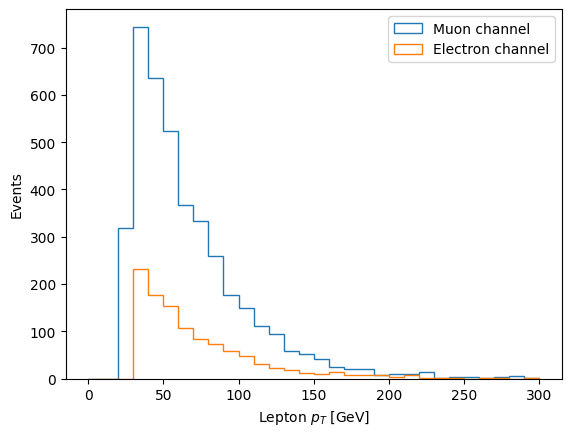

Advances of the Project
Title / Objective:
Reproducible Analysis of CMS Open Data: Search for Dark Matter in Association with Top Quarks (Based on the CMS publication: “Search for dark matter produced in association with a single top quark or a top quark pair in proton–proton collisions at (\(\sqrt s = 13 \TeV\)”).
Physics Motivation and Channel Strategy
The Large Hadron Collider (LHC) collides protons at center-of-mass energies high enough to probe physics beyond the Standard Model. Although the protons are composite objects, the relevant hard scatterings occur between their constituents — quarks and gluons. In the context of simplified dark matter models, these partonic interactions can produce top quarks together with a new mediator particle (commonly denoted φ for scalar or a for pseudoscalar). The mediator then decays invisibly into a pair of dark matter candidates (\(\chi \bar{\chi}\)). At the detector level, this results in events with multiple top quarks plus significant missing transverse momentum (\(p_T^{\text{miss}}\)), the latter coming from both neutrinos and the invisible χ particles.
The production mechanisms of interest include:
-
Gluon fusion:
$$ gg \to t \bar{t}\,\phi \to t \bar{t} + \chi \bar{\chi} $$ -
Single top associated production:
$$ gb \to t \phi \to t + \chi \bar{\chi} $$ -
t–channel production:
$$ qq' \to tb \phi \to tb + \chi \bar{\chi} $$
In all cases, the top quarks decay via \(t \to W b\). Each W boson subsequently decays either leptonically (\(W \to \ell \nu\)) or hadronically (\(W \to q \bar{q}'\)). Thus, the final states contain a mixture of b-tagged jets, light-flavor jets, charged leptons (electrons or muons), and genuine \(p_T^{\text{miss}}\). The specific experimental signature depends strongly on the decay mode of the W bosons.
Because of this, analyses are divided into channels, each defined by the number of isolated charged leptons:
- Single-lepton (SL): one isolated electron or muon, several jets (including ≥1 b-tag), and nonzero \(p_T^{\text{miss}}\). This channel is statistically powerful and relatively clean, striking a balance between signal sensitivity and manageable backgrounds.
- All-hadronic (AH): no isolated leptons, many jets including b-tagged jets, and \(p_T^{\text{miss}}\). While it has the largest raw yield, it suffers from overwhelming QCD multijet background, which can fake \(p_T^{\text{miss}}\).
- Dilepton: two isolated leptons, large \(p_T^{\text{miss}}\), and multiple jets. It provides a very clean signal region but is limited by low branching fraction, hence low statistics.
In this notebook, we concentrate on the single-lepton channel with exactly one muon. There are both theoretical and practical reasons for this choice. From the physics side, the SL channel has the right compromise: it suppresses pure QCD while retaining enough events to make meaningful comparisons. From the experimental side, single-muon triggers are robust, well understood in CMS, and ensure efficient data collection. This focus allows us to demonstrate the full workflow — from event selection to histograms — in a setting where the interplay between signal characteristics and background processes can be clearly explained. Splitting into channels is therefore not a stylistic decision but a physics necessity: each final state probes the same underlying processes under different background conditions and detector signatures.
After defining the objective of the project (Reproducible Analysis of CMS Open Data), we discussed in which data format to work — NanoAOD or MiniAOD. We decided to use NanoAOD, because it is lighter and optimized for analysis tasks.
In the most precise version, we work within cernbox/swan, but it can work in any Jupyter environment; the important packages are: uproot and awkward
Single Lepton
We import all the libraries that we are going to use.
%load_ext autoreload
%autoreload 2
import numpy as np
import pandas as pd
import matplotlib.pyplot as plt
import hist
import requests
import os
import time
import json
import awkward as ak
import uproot
import vector
vector.register_awkward()
Matplotlib is building the font cache; this may take a moment.
We will use the dpoa_workshop_utilities module to help you access the datasets. The functions it contains are:
The nanoaod_filenames is a dictionary with the urls to the file indexes of the root files for every dataset that we will use in the analysis.
The pretty_print(fields, fmt='40s', require=None, ignore=None) function allows you to print subsets of keys based on strings that you require or ignore. It will also format that output based on how many characters you want in a column (you are limited to 80 characters per line).
The build_lumi_mask(lumifile, tree, verbose=False) function helps you mask (select) the data that's collected from collisions.
#-------------------------------
import dpoa_workshop
from dpoa_workshop import (
nanoaod_filenames,
get_files_for_dataset,
pretty_print,
build_lumi_mask
)
#-------------------------------------------
In the drafts related to the papers, the datasets used from 2016 are listed along with their run periods and corresponding luminosities. However, one must be careful with these values, because not all periods are available and the data format differs from the one originally used, as previously noted.”
from IPython.display import Image, display
display(Image(filename="dataset_2016.png"))

display(Image(filename="MC_data.png"))

Building the Ntuple File Index
CMS Open Data provides file index text files (file_index.txt) for each dataset.
These contain the actual XRootD paths to the NanoAOD .root files, along with metadata such as the number of events per file. Example line:
root://eospublic.cern.ch//eos/opendata/cms/mc/.../nano_1.root nevts=58293
The objective is to collect file paths from multiple URLs, organize them by dataset, and store them in a JSON file, while handling possible download errors so the program keeps running.
To streamline the workflow:
- We define a function
download_files(url)that fetches eachfile_index.txtvia HTTP and extracts only the ROOT file paths. - We loop over all entries in
nanoaod_filenames(the dictionary we built earlier) and collect the full list of ROOT files per dataset. - The result is stored in a new dictionary
ntuples, which maps dataset -- list of ROOT file paths. - Finally, we save this as a JSON file (
ntuples.json) for later reuse
def download_files(url):
r = requests.get(url)
lines = [ln.strip() for ln in r.text.splitlines() if ln.strip()]
paths = [ln.split()[0] for ln in lines]
return paths
ntuples = {}
for dataset, urls in nanoaod_filenames.items():
all_paths = []
for url in urls:
try:
all_paths.extend(download_files(url))
except Exception as e:
print(f"[warn] {dataset} {url}--{e}")
ntuples[dataset] = all_paths
with open("ntuples.json", "w") as f:
json.dump(ntuples, f, indent=2)
print("ntuples.json :", list(ntuples.keys()))
ntuples.json : ['met', 'SingleMuon', 'SingleElectron', 'ttbar-semileptonic', 'ttbar-hadronic', 't-channel-top', 'ttW', 'WJets-HT400to600', 'DYJets-Zpt200', 'WW', 'ZZ', 'Zvv']
And we will download important files like the luminosity file.
!wget https://opendata.cern.ch/record/14220/files/Cert_271036-284044_13TeV_Legacy2016_Collisions16_JSON.txt
--2025-11-05 20:43:37-- https://opendata.cern.ch/record/14220/files/Cert_271036-284044_13TeV_Legacy2016_Collisions16_JSON.txt
Resolving opendata.cern.ch (opendata.cern.ch)... 137.138.6.31, 2001:1458:201:8b::100:1c8
Connecting to opendata.cern.ch (opendata.cern.ch)|137.138.6.31|:443... connected.
HTTP request sent, awaiting response... 200 OK
Length: 11686 (11K) [text/plain]
Saving to: ‘Cert_271036-284044_13TeV_Legacy2016_Collisions16_JSON.txt’
Cert_271036-284044_ 100%[===================>] 11.41K --.-KB/s in 0.001s
2025-11-05 20:43:38 (10.2 MB/s) - ‘Cert_271036-284044_13TeV_Legacy2016_Collisions16_JSON.txt’ saved [11686/11686]
Complete dictionary, in case it's possible to add all the events but it hasn't been found or verified yet...
# --- Cross sections in pb de todo los dataset del paper ---
XSEC2_PB = {
# --- TOP QUARK ---
"ttbar-semileptonic": 364.35,
"t-channel-top": 136.02, # ST t-channel top
"t-channel-antitop": 80.95, # ST t-channel antitop
"tW-top": 35.85, # ST tW top
# --- Rare Top ---
"ttW": 0.2043, # to TTWJetsToLNu
"ttZ": 0.2529, # to TTZToLLNuNu
# --- WJETS (HT Binned) ---
"WJets-HT70to100": 1372.0,
"WJets-HT100to200": 1345.0, # (Revisa este valor, parece alto para ser binned, quizás es LO)
"WJets-HT200to400": 359.7,
"WJets-HT400to600": 48.91,
"WJets-HT600to800": 12.05,
"WJets-HT800to1200": 5.501,
"WJets-HT1200to2500": 1.329,
"WJets-HT2500toInf": 0.0322,
# --- DRELL-YAN (DY) ---
"DYJets-HT100to200": 147.40,
"DYJets-HT200to400": 40.99,
"DYJets-HT400to600": 5.678,
# --- DIBOSON ---
"WW": 118.7, # sumados dan aprox esto
"ZZ": 16.6, #
"WZ": 47.13
}
until while these datasets are being used
XSEC_PB = {
# --- Top Quark ---
"ttbar-semileptonic": 364.35,
"ttbar-hadronic": 377.96,
"t-channel-top": 136.02,
"ttW": 0.2043,
# --- WJets ---
"WJets-HT400to600": 48.91,
# --- Electroweak / Bosons ---
"DYJets-Zpt200": 1.27,
"WW": 118.7,
"ZZ": 16.6,
"Zvv": 77.3,
}
This function builds the fileset used by the analysis. It reads the JSON inventory of ntuples, identifies which samples are data or MC, applies an optional file limit for fast debugging, and attaches minimal metadata such as the cross section and number of files. The output is a clean, ready-to-use dictionary that tells the processor exactly which datasets to run over and how they should be treated.
def construct_fileset(ntuples_json="ntuples.json", limit=None, verbose=True):
"""
Parses the input JSON inventory and assigns metadata (xsec, is_data).
Args:
ntuples_json (str): Path to the JSON file containing the file lists.
limit (int or None): Max number of files to load per process.
Useful for quick debugging (e.g., limit=1).
If None, loads all files (production mode).
verbose (bool): If True, prints a summary table of loaded samples.
Returns:
dict: A dictionary structured for the processor (Coffea/UpRoot).
"""
# Load the file manifest
with open(ntuples_json) as f:
info = json.load(f)
fileset = {}
if verbose:
print(f"\n{'Process Name':30} {'Type':>6} {'N Files':>10} {'XSEC [pb]':>12}")
print("-" * 65)
# Iterate over each process found in the JSON
for process_name, file_list in info.items():
# --- A. APPLY LIMIT (DEBUG MODE) ---
# Slicing handles None gracefully, but explicit check is clearer for readers
if limit is not None:
files_to_use = file_list[:limit]
else:
files_to_use = file_list
# --- B. IDENTIFY TYPE (DATA vs MC) ---
# Logic: If process exists in the Cross-Section table, treat as Simulation (MC).
# Otherwise, treat as Real Data.
if process_name in XSEC_PB:
is_data = False
xsec_value = XSEC_PB[process_name]
proc_type = "MC"
else:
is_data = True
xsec_value = None # Real data has no theoretical xsec here
proc_type = "DATA"
# --- C. BUILD DICTIONARY ---
# Minimal metadata structure to keep it lightweight
fileset[process_name] = {
"files": files_to_use,
"metadata": {
"is_data": is_data,
"xsec": xsec_value,
"n_files_loaded": len(files_to_use)
}
}
# --- D. LOGGING ---
if verbose:
xsec_str = f"{xsec_value:.2f}" if xsec_value else "-"
print(f"{process_name:30} {proc_type:>6} {len(files_to_use):>10} {xsec_str:>12}")
if verbose:
print("-" * 65)
print(f" Fileset construction complete. Loaded {len(fileset)} processes.")
return fileset
This line initializes the full list of datasets for the analysis. It loads all ntuples defined in ntuples.json (since limit=None) and prints a summary of the samples. The resulting fileset becomes the central input that tells the processor which data and MC files to process.
fileset = construct_fileset(
ntuples_json="ntuples.json",
limit=None,
verbose=True
)
Process Name Type N Files XSEC [pb]
-----------------------------------------------------------------
met DATA 32 -
SingleMuon DATA 82 -
SingleElectron DATA 80 -
ttbar-semileptonic MC 138 364.35
ttbar-hadronic MC 146 377.96
t-channel-top MC 25 136.02
ttW MC 12 0.20
WJets-HT400to600 MC 11 48.91
DYJets-Zpt200 MC 10 1.27
WW MC 41 118.70
ZZ MC 17 16.60
Zvv MC 14 77.30
-----------------------------------------------------------------
Fileset construction complete. Loaded 12 processes.
Before running a massive analysis loop (which might take hours), a physicist always opens one single file first. We call this Exploratory Data Analysis (EDA). You need to verify:
1.Are the files actually there?
2.What are the variable names? (Is it Muon_pt or Muon_pT? Case matters!)
3.What Triggers (HLT) are available?
Here is the code organized as a clear "Exploratory Phase" for students.
Why do we do this? We are about to treat the data as a "black box" in the processing loop. But we need to verify the inputs first. We use uproot, which is a Python library that allows us to read CERN ROOT files directly, without needing C++.
dataset = "SingleMuon"
for i, fpath in enumerate(fileset[dataset]["files"][:10]):
print(f"{i+1:2d}. {fpath}")
1. root://eospublic.cern.ch//eos/opendata/cms/Run2016H/SingleMuon/NANOAOD/UL2016_MiniAODv2_NanoAODv9-v1/120000/61FC1E38-F75C-6B44-AD19-A9894155874E.root
2. root://eospublic.cern.ch//eos/opendata/cms/Run2016H/SingleMuon/NANOAOD/UL2016_MiniAODv2_NanoAODv9-v1/1210000/576759DA-4A35-534B-B926-2A9E4A5A7268.root
3. root://eospublic.cern.ch//eos/opendata/cms/Run2016H/SingleMuon/NANOAOD/UL2016_MiniAODv2_NanoAODv9-v1/130000/0107961B-4308-F845-8F96-E14622BBA484.root
4. root://eospublic.cern.ch//eos/opendata/cms/Run2016H/SingleMuon/NANOAOD/UL2016_MiniAODv2_NanoAODv9-v1/130000/0DEE1709-0416-F24B-ACB2-C68997CB6465.root
5. root://eospublic.cern.ch//eos/opendata/cms/Run2016H/SingleMuon/NANOAOD/UL2016_MiniAODv2_NanoAODv9-v1/130000/1C08614E-0C0E-6044-966A-CAF630CAEF8F.root
6. root://eospublic.cern.ch//eos/opendata/cms/Run2016H/SingleMuon/NANOAOD/UL2016_MiniAODv2_NanoAODv9-v1/130000/1D87B4FB-E31C-9F43-AC21-C32469DE9FC6.root
7. root://eospublic.cern.ch//eos/opendata/cms/Run2016H/SingleMuon/NANOAOD/UL2016_MiniAODv2_NanoAODv9-v1/130000/1EB443F2-1230-8042-B8AE-FD50329CA59B.root
8. root://eospublic.cern.ch//eos/opendata/cms/Run2016H/SingleMuon/NANOAOD/UL2016_MiniAODv2_NanoAODv9-v1/130000/2045F967-9F0A-7C46-9946-787B27D56E88.root
9. root://eospublic.cern.ch//eos/opendata/cms/Run2016H/SingleMuon/NANOAOD/UL2016_MiniAODv2_NanoAODv9-v1/130000/236A04EE-C105-D947-8A2E-F8CC6731644F.root
10. root://eospublic.cern.ch//eos/opendata/cms/Run2016H/SingleMuon/NANOAOD/UL2016_MiniAODv2_NanoAODv9-v1/130000/370BE877-DA24-DB41-A875-07A86EAB6852.root
#import uproot
f = uproot.open(fileset["SingleMuon"]["files"][0])
events = f["Events"]
for name in events.keys():
if "Muon" in name or "Electron" in name or "Jet" in name or "MET" in name:
print(name)
CaloMET_phi
CaloMET_pt
CaloMET_sumEt
ChsMET_phi
ChsMET_pt
ChsMET_sumEt
nCorrT1METJet
CorrT1METJet_area
CorrT1METJet_eta
CorrT1METJet_muonSubtrFactor
CorrT1METJet_phi
CorrT1METJet_rawPt
DeepMETResolutionTune_phi
DeepMETResolutionTune_pt
DeepMETResponseTune_phi
DeepMETResponseTune_pt
nElectron
Electron_dEscaleDown
Electron_dEscaleUp
Electron_dEsigmaDown
Electron_dEsigmaUp
Electron_deltaEtaSC
Electron_dr03EcalRecHitSumEt
Electron_dr03HcalDepth1TowerSumEt
Electron_dr03TkSumPt
Electron_dr03TkSumPtHEEP
Electron_dxy
Electron_dxyErr
Electron_dz
Electron_dzErr
Electron_eCorr
Electron_eInvMinusPInv
Electron_energyErr
Electron_eta
Electron_hoe
Electron_ip3d
Electron_jetPtRelv2
Electron_jetRelIso
Electron_mass
Electron_miniPFRelIso_all
Electron_miniPFRelIso_chg
Electron_mvaFall17V2Iso
Electron_mvaFall17V2noIso
Electron_pfRelIso03_all
Electron_pfRelIso03_chg
Electron_phi
Electron_pt
Electron_r9
Electron_scEtOverPt
Electron_sieie
Electron_sip3d
Electron_mvaTTH
Electron_charge
Electron_cutBased
Electron_jetIdx
Electron_pdgId
Electron_photonIdx
Electron_tightCharge
Electron_vidNestedWPBitmap
Electron_vidNestedWPBitmapHEEP
Electron_convVeto
Electron_cutBased_HEEP
Electron_isPFcand
Electron_jetNDauCharged
Electron_lostHits
Electron_mvaFall17V2Iso_WP80
Electron_mvaFall17V2Iso_WP90
Electron_mvaFall17V2Iso_WPL
Electron_mvaFall17V2noIso_WP80
Electron_mvaFall17V2noIso_WP90
Electron_mvaFall17V2noIso_WPL
Electron_seedGain
nFatJet
FatJet_area
FatJet_btagCSVV2
FatJet_btagDDBvLV2
FatJet_btagDDCvBV2
FatJet_btagDDCvLV2
FatJet_btagDeepB
FatJet_btagHbb
FatJet_deepTagMD_H4qvsQCD
FatJet_deepTagMD_HbbvsQCD
FatJet_deepTagMD_TvsQCD
FatJet_deepTagMD_WvsQCD
FatJet_deepTagMD_ZHbbvsQCD
FatJet_deepTagMD_ZHccvsQCD
FatJet_deepTagMD_ZbbvsQCD
FatJet_deepTagMD_ZvsQCD
FatJet_deepTagMD_bbvsLight
FatJet_deepTagMD_ccvsLight
FatJet_deepTag_H
FatJet_deepTag_QCD
FatJet_deepTag_QCDothers
FatJet_deepTag_TvsQCD
FatJet_deepTag_WvsQCD
FatJet_deepTag_ZvsQCD
FatJet_eta
FatJet_mass
FatJet_msoftdrop
FatJet_n2b1
FatJet_n3b1
FatJet_particleNetMD_QCD
FatJet_particleNetMD_Xbb
FatJet_particleNetMD_Xcc
FatJet_particleNetMD_Xqq
FatJet_particleNet_H4qvsQCD
FatJet_particleNet_HbbvsQCD
FatJet_particleNet_HccvsQCD
FatJet_particleNet_QCD
FatJet_particleNet_TvsQCD
FatJet_particleNet_WvsQCD
FatJet_particleNet_ZvsQCD
FatJet_particleNet_mass
FatJet_phi
FatJet_pt
FatJet_rawFactor
FatJet_tau1
FatJet_tau2
FatJet_tau3
FatJet_tau4
FatJet_lsf3
FatJet_jetId
FatJet_subJetIdx1
FatJet_subJetIdx2
FatJet_electronIdx3SJ
FatJet_muonIdx3SJ
FatJet_nConstituents
nJet
Jet_area
Jet_btagCSVV2
Jet_btagDeepB
Jet_btagDeepCvB
Jet_btagDeepCvL
Jet_btagDeepFlavB
Jet_btagDeepFlavCvB
Jet_btagDeepFlavCvL
Jet_btagDeepFlavQG
Jet_chEmEF
Jet_chFPV0EF
Jet_chHEF
Jet_eta
Jet_hfsigmaEtaEta
Jet_hfsigmaPhiPhi
Jet_mass
Jet_muEF
Jet_muonSubtrFactor
Jet_neEmEF
Jet_neHEF
Jet_phi
Jet_pt
Jet_puIdDisc
Jet_qgl
Jet_rawFactor
Jet_bRegCorr
Jet_bRegRes
Jet_cRegCorr
Jet_cRegRes
Jet_electronIdx1
Jet_electronIdx2
Jet_hfadjacentEtaStripsSize
Jet_hfcentralEtaStripSize
Jet_jetId
Jet_muonIdx1
Jet_muonIdx2
Jet_nElectrons
Jet_nMuons
Jet_puId
Jet_nConstituents
L1PreFiringWeight_Muon_Nom
L1PreFiringWeight_Muon_StatDn
L1PreFiringWeight_Muon_StatUp
L1PreFiringWeight_Muon_SystDn
L1PreFiringWeight_Muon_SystUp
nLowPtElectron
LowPtElectron_ID
LowPtElectron_convVtxRadius
LowPtElectron_deltaEtaSC
LowPtElectron_dxy
LowPtElectron_dxyErr
LowPtElectron_dz
LowPtElectron_dzErr
LowPtElectron_eInvMinusPInv
LowPtElectron_embeddedID
LowPtElectron_energyErr
LowPtElectron_eta
LowPtElectron_hoe
LowPtElectron_mass
LowPtElectron_miniPFRelIso_all
LowPtElectron_miniPFRelIso_chg
LowPtElectron_phi
LowPtElectron_pt
LowPtElectron_ptbiased
LowPtElectron_r9
LowPtElectron_scEtOverPt
LowPtElectron_sieie
LowPtElectron_unbiased
LowPtElectron_charge
LowPtElectron_convWP
LowPtElectron_pdgId
LowPtElectron_convVeto
LowPtElectron_lostHits
MET_MetUnclustEnUpDeltaX
MET_MetUnclustEnUpDeltaY
MET_covXX
MET_covXY
MET_covYY
MET_phi
MET_pt
MET_significance
MET_sumEt
MET_sumPtUnclustered
nMuon
Muon_dxy
Muon_dxyErr
Muon_dxybs
Muon_dz
Muon_dzErr
Muon_eta
Muon_ip3d
Muon_jetPtRelv2
Muon_jetRelIso
Muon_mass
Muon_miniPFRelIso_all
Muon_miniPFRelIso_chg
Muon_pfRelIso03_all
Muon_pfRelIso03_chg
Muon_pfRelIso04_all
Muon_phi
Muon_pt
Muon_ptErr
Muon_segmentComp
Muon_sip3d
Muon_softMva
Muon_tkRelIso
Muon_tunepRelPt
Muon_mvaLowPt
Muon_mvaTTH
Muon_charge
Muon_jetIdx
Muon_nStations
Muon_nTrackerLayers
Muon_pdgId
Muon_tightCharge
Muon_fsrPhotonIdx
Muon_highPtId
Muon_highPurity
Muon_inTimeMuon
Muon_isGlobal
Muon_isPFcand
Muon_isStandalone
Muon_isTracker
Muon_jetNDauCharged
Muon_looseId
Muon_mediumId
Muon_mediumPromptId
Muon_miniIsoId
Muon_multiIsoId
Muon_mvaId
Muon_mvaLowPtId
Muon_pfIsoId
Muon_puppiIsoId
Muon_softId
Muon_softMvaId
Muon_tightId
Muon_tkIsoId
Muon_triggerIdLoose
PuppiMET_phi
PuppiMET_phiJERDown
PuppiMET_phiJERUp
PuppiMET_phiJESDown
PuppiMET_phiJESUp
PuppiMET_phiUnclusteredDown
PuppiMET_phiUnclusteredUp
PuppiMET_pt
PuppiMET_ptJERDown
PuppiMET_ptJERUp
PuppiMET_ptJESDown
PuppiMET_ptJESUp
PuppiMET_ptUnclusteredDown
PuppiMET_ptUnclusteredUp
PuppiMET_sumEt
RawMET_phi
RawMET_pt
RawMET_sumEt
RawPuppiMET_phi
RawPuppiMET_pt
RawPuppiMET_sumEt
nSoftActivityJet
SoftActivityJet_eta
SoftActivityJet_phi
SoftActivityJet_pt
SoftActivityJetHT
SoftActivityJetHT10
SoftActivityJetHT2
SoftActivityJetHT5
SoftActivityJetNjets10
SoftActivityJetNjets2
SoftActivityJetNjets5
nSubJet
SubJet_btagCSVV2
SubJet_btagDeepB
SubJet_eta
SubJet_mass
SubJet_n2b1
SubJet_n3b1
SubJet_phi
SubJet_pt
SubJet_rawFactor
SubJet_tau1
SubJet_tau2
SubJet_tau3
SubJet_tau4
TkMET_phi
TkMET_pt
TkMET_sumEt
Electron_cleanmask
Jet_cleanmask
Muon_cleanmask
L1_CastorHaloMuon
L1_CastorHaloMuon_BptxAND
L1_CastorHighJet_BptxAND
L1_CastorMediumJet_BptxAND
L1_DoubleJet12_ForwardBackward
L1_DoubleJet16_ForwardBackward
L1_DoubleJet30_Mj30j30_400_Mu10
L1_DoubleJet30_Mj30j30_400_Mu6
L1_DoubleJet8_ForwardBackward
L1_DoubleJetC100
L1_DoubleJetC112
L1_DoubleJetC120
L1_DoubleJetC40
L1_DoubleJetC50
L1_DoubleJetC60
L1_DoubleJetC60_ETM60
L1_DoubleJetC80
L1_DoubleJet_100_30_Mj30j30_620
L1_DoubleJet_90_30_Mj30j30_620
L1_ETM75_Jet60_dPhi_Min0p4
L1_Jet32_DoubleMu_10_0_dPhi_Jet_Mu0_Max0p4_dPhi_Mu_Mu_Min1p0
L1_Jet32_Mu0_EG10_dPhi_Jet_Mu_Max0p4_dPhi_Mu_EG_Min1p0
L1_Mu3_JetC120
L1_Mu3_JetC120_dEta_Max0p4_dPhi_Max0p4
L1_Mu3_JetC16
L1_Mu3_JetC16_dEta_Max0p4_dPhi_Max0p4
L1_Mu3_JetC60
L1_Mu3_JetC60_dEta_Max0p4_dPhi_Max0p4
L1_QuadJetC36_Tau52
L1_QuadJetC40
L1_QuadJetC50
L1_QuadJetC60
L1_SingleJet12
L1_SingleJet120
L1_SingleJet12_BptxAND
L1_SingleJet140
L1_SingleJet150
L1_SingleJet16
L1_SingleJet160
L1_SingleJet170
L1_SingleJet180
L1_SingleJet20
L1_SingleJet200
L1_SingleJet35
L1_SingleJet4
L1_SingleJet60
L1_SingleJet8
L1_SingleJet8_BptxAND
L1_SingleJet90
L1_SingleJetC20_NotBptxOR
L1_SingleJetC20_NotBptxOR_3BX
L1_SingleJetC40_NotBptxOR_3BX
L1_SingleJetC40_NotBptxOR_5BX
L1_TripleJet_84_68_48_VBF
L1_TripleJet_88_72_56_VBF
L1_TripleJet_92_76_64_VBF
Flag_BadPFMuonFilter
Flag_BadPFMuonDzFilter
Flag_BadPFMuonSummer16Filter
Flag_METFilters
Flag_BadPFMuonFilter_pRECO
Flag_BadPFMuonSummer16Filter_pRECO
Flag_METFilters_pRECO
HLT_AK8PFJet360_TrimMass30
HLT_AK8PFJet400_TrimMass30
HLT_AK8DiPFJet300_200_TrimMass30_BTagCSV_p20
HLT_AK8DiPFJet280_200_TrimMass30_BTagCSV_p087
HLT_AK8DiPFJet300_200_TrimMass30_BTagCSV_p087
HLT_AK8DiPFJet300_200_TrimMass30
HLT_AK8DiPFJet280_200_TrimMass30
HLT_AK8DiPFJet250_200_TrimMass30
HLT_AK8DiPFJet280_200_TrimMass30_BTagCSV_p20
HLT_AK8DiPFJet250_200_TrimMass30_BTagCSV_p20
HLT_CaloJet500_NoJetID
HLT_Ele27_WPTight_Gsf_L1JetTauSeeded
HLT_Ele45_CaloIdVT_GsfTrkIdT_PFJet200_PFJet50
HLT_IsoMu16_eta2p1_MET30
HLT_IsoMu16_eta2p1_MET30_LooseIsoPFTau50_Trk30_eta2p1
HLT_JetE30_NoBPTX3BX
HLT_JetE30_NoBPTX
HLT_JetE50_NoBPTX3BX
HLT_JetE70_NoBPTX3BX
HLT_LooseIsoPFTau50_Trk30_eta2p1_MET90
HLT_LooseIsoPFTau50_Trk30_eta2p1_MET110
HLT_LooseIsoPFTau50_Trk30_eta2p1_MET120
HLT_Mu30_eta2p1_PFJet150_PFJet50
HLT_Mu40_eta2p1_PFJet200_PFJet50
HLT_Mu28NoFiltersNoVtx_DisplacedJet40_Loose
HLT_Mu38NoFiltersNoVtxDisplaced_DisplacedJet60_Tight
HLT_Mu38NoFiltersNoVtxDisplaced_DisplacedJet60_Loose
HLT_Mu38NoFiltersNoVtx_DisplacedJet60_Loose
HLT_Mu28NoFiltersNoVtx_CentralCaloJet40
HLT_PFHT300_PFMET110
HLT_PFHT550_4JetPt50
HLT_PFHT650_4JetPt50
HLT_PFHT750_4JetPt70
HLT_PFHT750_4JetPt80
HLT_PFHT800_4JetPt50
HLT_PFHT850_4JetPt50
HLT_PFJet15_NoCaloMatched
HLT_PFJet25_NoCaloMatched
HLT_DiPFJet15_NoCaloMatched
HLT_DiPFJet25_NoCaloMatched
HLT_DiPFJet15_FBEta3_NoCaloMatched
HLT_DiPFJet25_FBEta3_NoCaloMatched
HLT_DiPFJetAve15_HFJEC
HLT_DiPFJetAve25_HFJEC
HLT_DiPFJetAve35_HFJEC
HLT_AK8PFJet40
HLT_AK8PFJet60
HLT_AK8PFJet80
HLT_AK8PFJet140
HLT_AK8PFJet200
HLT_AK8PFJet260
HLT_AK8PFJet320
HLT_AK8PFJet400
HLT_AK8PFJet450
HLT_AK8PFJet500
HLT_PFJet40
HLT_PFJet60
HLT_PFJet80
HLT_PFJet140
HLT_PFJet200
HLT_PFJet260
HLT_PFJet320
HLT_PFJet400
HLT_PFJet450
HLT_PFJet500
HLT_DiPFJetAve40
HLT_DiPFJetAve60
HLT_DiPFJetAve80
HLT_DiPFJetAve140
HLT_DiPFJetAve200
HLT_DiPFJetAve260
HLT_DiPFJetAve320
HLT_DiPFJetAve400
HLT_DiPFJetAve500
HLT_DiPFJetAve60_HFJEC
HLT_DiPFJetAve80_HFJEC
HLT_DiPFJetAve100_HFJEC
HLT_DiPFJetAve160_HFJEC
HLT_DiPFJetAve220_HFJEC
HLT_DiPFJetAve300_HFJEC
HLT_DiPFJet40_DEta3p5_MJJ600_PFMETNoMu140
HLT_DiPFJet40_DEta3p5_MJJ600_PFMETNoMu80
HLT_DiCentralPFJet170
HLT_SingleCentralPFJet170_CFMax0p1
HLT_DiCentralPFJet170_CFMax0p1
HLT_DiCentralPFJet330_CFMax0p5
HLT_DiCentralPFJet430
HLT_DiJetVBF_PassThrough
HLT_DiJetVBFMu_PassThrough
HLT_PFHT200_DiPFJetAve90_PFAlphaT0p63
HLT_PFHT250_DiPFJetAve90_PFAlphaT0p58
HLT_PFHT300_DiPFJetAve90_PFAlphaT0p54
HLT_PFHT350_DiPFJetAve90_PFAlphaT0p53
HLT_PFHT400_DiPFJetAve90_PFAlphaT0p52
HLT_MET60_IsoTrk35_Loose
HLT_MET75_IsoTrk50
HLT_MET90_IsoTrk50
HLT_PFMET170_NotCleaned
HLT_PFMET170_HBHECleaned
HLT_PFMET170_BeamHaloCleaned
HLT_PFMET170_HBHE_BeamHaloCleaned
HLT_PFMETTypeOne190_HBHE_BeamHaloCleaned
HLT_PFMET110_PFMHT110_IDTight
HLT_PFMET120_PFMHT120_IDTight
HLT_CaloMHTNoPU90_PFMET90_PFMHT90_IDTight_BTagCSV_p067
HLT_CaloMHTNoPU90_PFMET90_PFMHT90_IDTight
HLT_QuadPFJet_BTagCSV_p016_p11_VBF_Mqq200
HLT_QuadPFJet_BTagCSV_p016_VBF_Mqq460
HLT_QuadPFJet_BTagCSV_p016_p11_VBF_Mqq240
HLT_QuadPFJet_BTagCSV_p016_VBF_Mqq500
HLT_QuadPFJet_VBF
HLT_L1_TripleJet_VBF
HLT_QuadJet45_TripleBTagCSV_p087
HLT_QuadJet45_DoubleBTagCSV_p087
HLT_DoubleJet90_Double30_TripleBTagCSV_p087
HLT_DoubleJet90_Double30_DoubleBTagCSV_p087
HLT_DoubleJetsC100_DoubleBTagCSV_p026_DoublePFJetsC160
HLT_DoubleJetsC100_DoubleBTagCSV_p014_DoublePFJetsC100MaxDeta1p6
HLT_DoubleJetsC112_DoubleBTagCSV_p026_DoublePFJetsC172
HLT_DoubleJetsC112_DoubleBTagCSV_p014_DoublePFJetsC112MaxDeta1p6
HLT_DoubleJetsC100_SingleBTagCSV_p026
HLT_DoubleJetsC100_SingleBTagCSV_p014
HLT_DoubleJetsC100_SingleBTagCSV_p026_SinglePFJetC350
HLT_DoubleJetsC100_SingleBTagCSV_p014_SinglePFJetC350
HLT_Photon135_PFMET100
HLT_Photon22_R9Id90_HE10_Iso40_EBOnly_PFMET40
HLT_Photon36_R9Id90_HE10_Iso40_EBOnly_PFMET40
HLT_Photon50_R9Id90_HE10_Iso40_EBOnly_PFMET40
HLT_Photon75_R9Id90_HE10_Iso40_EBOnly_PFMET40
HLT_Photon90_R9Id90_HE10_Iso40_EBOnly_PFMET40
HLT_Photon120_R9Id90_HE10_Iso40_EBOnly_PFMET40
HLT_Ele8_CaloIdL_TrackIdL_IsoVL_PFJet30
HLT_Ele12_CaloIdL_TrackIdL_IsoVL_PFJet30
HLT_Ele17_CaloIdL_TrackIdL_IsoVL_PFJet30
HLT_Ele23_CaloIdL_TrackIdL_IsoVL_PFJet30
HLT_BTagMu_DiJet20_Mu5
HLT_BTagMu_DiJet40_Mu5
HLT_BTagMu_DiJet70_Mu5
HLT_BTagMu_DiJet110_Mu5
HLT_BTagMu_DiJet170_Mu5
HLT_BTagMu_Jet300_Mu5
HLT_BTagMu_AK8Jet300_Mu5
HLT_Ele23_Ele12_CaloIdL_TrackIdL_IsoVL_DZ_L1JetTauSeeded
HLT_Mu6_PFHT200_PFMET100
HLT_PFHT650_WideJetMJJ900DEtaJJ1p5
HLT_PFHT650_WideJetMJJ950DEtaJJ1p5
HLT_Dimuon0_Jpsi_Muon
HLT_Dimuon0_Upsilon_Muon
HLT_QuadMuon0_Dimuon0_Jpsi
HLT_QuadMuon0_Dimuon0_Upsilon
HLT_Rsq0p02_MR400_TriPFJet80_60_40_DoubleBTagCSV_p063_Mbb60_200
HLT_Rsq0p02_MR450_TriPFJet80_60_40_DoubleBTagCSV_p063_Mbb60_200
HLT_Rsq0p02_MR500_TriPFJet80_60_40_DoubleBTagCSV_p063_Mbb60_200
HLT_Rsq0p02_MR550_TriPFJet80_60_40_DoubleBTagCSV_p063_Mbb60_200
HLT_VBF_DisplacedJet40_DisplacedTrack
HLT_VBF_DisplacedJet40_DisplacedTrack_2TrackIP2DSig5
HLT_VBF_DisplacedJet40_TightID_DisplacedTrack
HLT_VBF_DisplacedJet40_TightID_Hadronic
HLT_VBF_DisplacedJet40_VTightID_Hadronic
HLT_VBF_DisplacedJet40_VVTightID_Hadronic
HLT_VBF_DisplacedJet40_VTightID_DisplacedTrack
HLT_VBF_DisplacedJet40_VVTightID_DisplacedTrack
HLT_PFMETNoMu110_PFMHTNoMu110_IDTight
HLT_PFMETNoMu120_PFMHTNoMu120_IDTight
HLT_MonoCentralPFJet80_PFMETNoMu110_PFMHTNoMu110_IDTight
HLT_MonoCentralPFJet80_PFMETNoMu120_PFMHTNoMu120_IDTight
HLT_Mu10_CentralPFJet30_BTagCSV_p13
HLT_DoubleMu3_PFMET50
HLT_Ele10_CaloIdM_TrackIdM_CentralPFJet30_BTagCSV_p13
HLT_Ele15_IsoVVVL_PFHT400_PFMET50
HLT_Mu8_TrkIsoVVL_DiPFJet40_DEta3p5_MJJ750_HTT300_PFMETNoMu60
HLT_Mu10_TrkIsoVVL_DiPFJet40_DEta3p5_MJJ750_HTT350_PFMETNoMu60
HLT_Mu15_IsoVVVL_PFHT400_PFMET50
HLT_Mu3_PFJet40
HLT_Ele8_CaloIdM_TrackIdM_PFJet30
HLT_Ele12_CaloIdM_TrackIdM_PFJet30
HLT_Ele17_CaloIdM_TrackIdM_PFJet30
HLT_Ele23_CaloIdM_TrackIdM_PFJet30
HLT_Ele50_CaloIdVT_GsfTrkIdT_PFJet165
HLT_PFHT400_SixJet30_DoubleBTagCSV_p056
HLT_PFHT450_SixJet40_BTagCSV_p056
HLT_PFHT400_SixJet30
HLT_PFHT450_SixJet40
HLT_MET200
HLT_AK4CaloJet30
HLT_AK4CaloJet40
HLT_AK4CaloJet50
HLT_AK4CaloJet80
HLT_AK4CaloJet100
HLT_AK4PFJet30
HLT_AK4PFJet50
HLT_AK4PFJet80
HLT_AK4PFJet100
HLT_MET250
HLT_MET300
HLT_MET600
HLT_MET700
HLT_PFMET300
HLT_PFMET400
HLT_PFMET500
HLT_PFMET600
for b in events.keys():
if b.startswith("HLT_"):
print(b)
HLT_AK8PFJet360_TrimMass30
HLT_AK8PFJet400_TrimMass30
HLT_AK8PFHT750_TrimMass50
HLT_AK8PFHT800_TrimMass50
HLT_AK8DiPFJet300_200_TrimMass30_BTagCSV_p20
HLT_AK8DiPFJet280_200_TrimMass30_BTagCSV_p087
HLT_AK8DiPFJet300_200_TrimMass30_BTagCSV_p087
HLT_AK8DiPFJet300_200_TrimMass30
HLT_AK8PFHT700_TrimR0p1PT0p03Mass50
HLT_AK8PFHT650_TrimR0p1PT0p03Mass50
HLT_AK8PFHT600_TrimR0p1PT0p03Mass50_BTagCSV_p20
HLT_AK8DiPFJet280_200_TrimMass30
HLT_AK8DiPFJet250_200_TrimMass30
HLT_AK8DiPFJet280_200_TrimMass30_BTagCSV_p20
HLT_AK8DiPFJet250_200_TrimMass30_BTagCSV_p20
HLT_CaloJet500_NoJetID
HLT_Dimuon13_PsiPrime
HLT_Dimuon13_Upsilon
HLT_Dimuon20_Jpsi
HLT_DoubleEle24_22_eta2p1_WPLoose_Gsf
HLT_DoubleEle33_CaloIdL
HLT_DoubleEle33_CaloIdL_MW
HLT_DoubleEle33_CaloIdL_GsfTrkIdVL_MW
HLT_DoubleMediumCombinedIsoPFTau35_Trk1_eta2p1_Reg
HLT_DoubleTightCombinedIsoPFTau35_Trk1_eta2p1_Reg
HLT_DoubleMediumCombinedIsoPFTau40_Trk1_eta2p1_Reg
HLT_DoubleTightCombinedIsoPFTau40_Trk1_eta2p1_Reg
HLT_DoubleMediumCombinedIsoPFTau40_Trk1_eta2p1
HLT_DoubleTightCombinedIsoPFTau40_Trk1_eta2p1
HLT_DoubleEle37_Ele27_CaloIdL_GsfTrkIdVL
HLT_DoubleMu33NoFiltersNoVtx
HLT_DoubleMu38NoFiltersNoVtx
HLT_DoubleMu23NoFiltersNoVtxDisplaced
HLT_DoubleMu28NoFiltersNoVtxDisplaced
HLT_DoubleMu0
HLT_DoubleMu4_3_Bs
HLT_DoubleMu4_3_Jpsi_Displaced
HLT_DoubleMu4_JpsiTrk_Displaced
HLT_DoubleMu4_LowMassNonResonantTrk_Displaced
HLT_DoubleMu3_Trk_Tau3mu
HLT_DoubleMu4_PsiPrimeTrk_Displaced
HLT_Mu7p5_L2Mu2_Jpsi
HLT_Mu7p5_L2Mu2_Upsilon
HLT_Mu7p5_Track2_Jpsi
HLT_Mu7p5_Track3p5_Jpsi
HLT_Mu7p5_Track7_Jpsi
HLT_Mu7p5_Track2_Upsilon
HLT_Mu7p5_Track3p5_Upsilon
HLT_Mu7p5_Track7_Upsilon
HLT_Dimuon0er16_Jpsi_NoOS_NoVertexing
HLT_Dimuon6_Jpsi_NoVertexing
HLT_DoublePhoton60
HLT_DoublePhoton85
HLT_Ele20_eta2p1_WPLoose_Gsf_LooseIsoPFTau28
HLT_Ele22_eta2p1_WPLoose_Gsf_LooseIsoPFTau29
HLT_Ele22_eta2p1_WPLoose_Gsf
HLT_Ele24_eta2p1_WPLoose_Gsf_LooseIsoPFTau30
HLT_Ele25_WPTight_Gsf
HLT_Ele25_eta2p1_WPTight_Gsf
HLT_Ele27_WPLoose_Gsf_WHbbBoost
HLT_Ele27_WPTight_Gsf
HLT_Ele27_WPTight_Gsf_L1JetTauSeeded
HLT_Ele27_eta2p1_WPLoose_Gsf
HLT_Ele27_eta2p1_WPTight_Gsf
HLT_Ele30_WPTight_Gsf
HLT_Ele30_eta2p1_WPTight_Gsf
HLT_Ele32_WPTight_Gsf
HLT_Ele32_eta2p1_WPTight_Gsf
HLT_Ele36_eta2p1_WPLoose_Gsf_LooseIsoPFTau20_SingleL1
HLT_Ele45_CaloIdVT_GsfTrkIdT_PFJet200_PFJet50
HLT_Ele105_CaloIdVT_GsfTrkIdT
HLT_HT200
HLT_HT275
HLT_HT325
HLT_HT425
HLT_HT575
HLT_HT430to450
HLT_HT450to470
HLT_HT470to500
HLT_HT500to550
HLT_HT550to650
HLT_HT650
HLT_IsoMu16_eta2p1_MET30
HLT_IsoMu16_eta2p1_MET30_LooseIsoPFTau50_Trk30_eta2p1
HLT_DoubleIsoMu17_eta2p1_noDzCut
HLT_IsoMu19_eta2p1_LooseIsoPFTau20
HLT_IsoMu19_eta2p1_LooseIsoPFTau20_SingleL1
HLT_IsoMu19_eta2p1_MediumIsoPFTau32_Trk1_eta2p1_Reg
HLT_IsoMu19_eta2p1_LooseCombinedIsoPFTau20
HLT_IsoMu19_eta2p1_MediumCombinedIsoPFTau32_Trk1_eta2p1_Reg
HLT_IsoMu19_eta2p1_TightCombinedIsoPFTau32_Trk1_eta2p1_Reg
HLT_IsoMu21_eta2p1_MediumCombinedIsoPFTau32_Trk1_eta2p1_Reg
HLT_IsoMu21_eta2p1_TightCombinedIsoPFTau32_Trk1_eta2p1_Reg
HLT_IsoMu20
HLT_IsoMu21_eta2p1_LooseIsoPFTau20_SingleL1
HLT_IsoMu21_eta2p1_LooseIsoPFTau50_Trk30_eta2p1_SingleL1
HLT_IsoMu21_eta2p1_MediumIsoPFTau32_Trk1_eta2p1_Reg
HLT_IsoMu22
HLT_IsoMu22_eta2p1
HLT_IsoMu24
HLT_IsoMu24_eta2p1
HLT_IsoMu27
HLT_IsoTkMu20
HLT_IsoTkMu22
HLT_IsoTkMu22_eta2p1
HLT_IsoTkMu24
HLT_IsoTkMu24_eta2p1
HLT_IsoTkMu27
HLT_JetE30_NoBPTX3BX
HLT_JetE30_NoBPTX
HLT_JetE50_NoBPTX3BX
HLT_JetE70_NoBPTX3BX
HLT_L1SingleMu18
HLT_L2Mu10
HLT_L2DoubleMu23_NoVertex
HLT_L2DoubleMu28_NoVertex_2Cha_Angle2p5_Mass10
HLT_L2DoubleMu38_NoVertex_2Cha_Angle2p5_Mass10
HLT_L2Mu10_NoVertex_NoBPTX3BX
HLT_L2Mu10_NoVertex_NoBPTX
HLT_L2Mu45_NoVertex_3Sta_NoBPTX3BX
HLT_L2Mu40_NoVertex_3Sta_NoBPTX3BX
HLT_LooseIsoPFTau50_Trk30_eta2p1
HLT_LooseIsoPFTau50_Trk30_eta2p1_MET90
HLT_LooseIsoPFTau50_Trk30_eta2p1_MET110
HLT_LooseIsoPFTau50_Trk30_eta2p1_MET120
HLT_PFTau120_eta2p1
HLT_PFTau140_eta2p1
HLT_VLooseIsoPFTau120_Trk50_eta2p1
HLT_VLooseIsoPFTau140_Trk50_eta2p1
HLT_Mu17_Mu8
HLT_Mu17_Mu8_DZ
HLT_Mu17_Mu8_SameSign
HLT_Mu17_Mu8_SameSign_DZ
HLT_Mu20_Mu10
HLT_Mu20_Mu10_DZ
HLT_Mu20_Mu10_SameSign
HLT_Mu20_Mu10_SameSign_DZ
HLT_Mu17_TkMu8_DZ
HLT_Mu17_TrkIsoVVL_Mu8_TrkIsoVVL
HLT_Mu17_TrkIsoVVL_Mu8_TrkIsoVVL_DZ
HLT_Mu17_TrkIsoVVL_TkMu8_TrkIsoVVL
HLT_Mu17_TrkIsoVVL_TkMu8_TrkIsoVVL_DZ
HLT_Mu25_TkMu0_dEta18_Onia
HLT_Mu27_TkMu8
HLT_Mu30_TkMu11
HLT_Mu30_eta2p1_PFJet150_PFJet50
HLT_Mu40_TkMu11
HLT_Mu40_eta2p1_PFJet200_PFJet50
HLT_Mu20
HLT_TkMu17
HLT_TkMu17_TrkIsoVVL_TkMu8_TrkIsoVVL
HLT_TkMu17_TrkIsoVVL_TkMu8_TrkIsoVVL_DZ
HLT_TkMu20
HLT_Mu24_eta2p1
HLT_TkMu24_eta2p1
HLT_Mu27
HLT_TkMu27
HLT_Mu45_eta2p1
HLT_Mu50
HLT_TkMu50
HLT_Mu38NoFiltersNoVtx_Photon38_CaloIdL
HLT_Mu42NoFiltersNoVtx_Photon42_CaloIdL
HLT_Mu28NoFiltersNoVtxDisplaced_Photon28_CaloIdL
HLT_Mu33NoFiltersNoVtxDisplaced_Photon33_CaloIdL
HLT_Mu23NoFiltersNoVtx_Photon23_CaloIdL
HLT_DoubleMu18NoFiltersNoVtx
HLT_Mu28NoFiltersNoVtx_DisplacedJet40_Loose
HLT_Mu38NoFiltersNoVtxDisplaced_DisplacedJet60_Tight
HLT_Mu38NoFiltersNoVtxDisplaced_DisplacedJet60_Loose
HLT_Mu38NoFiltersNoVtx_DisplacedJet60_Loose
HLT_Mu28NoFiltersNoVtx_CentralCaloJet40
HLT_PFHT300_PFMET110
HLT_PFHT550_4JetPt50
HLT_PFHT650_4JetPt50
HLT_PFHT750_4JetPt70
HLT_PFHT750_4JetPt80
HLT_PFHT800_4JetPt50
HLT_PFHT850_4JetPt50
HLT_PFJet15_NoCaloMatched
HLT_PFJet25_NoCaloMatched
HLT_DiPFJet15_NoCaloMatched
HLT_DiPFJet25_NoCaloMatched
HLT_DiPFJet15_FBEta3_NoCaloMatched
HLT_DiPFJet25_FBEta3_NoCaloMatched
HLT_DiPFJetAve15_HFJEC
HLT_DiPFJetAve25_HFJEC
HLT_DiPFJetAve35_HFJEC
HLT_AK8PFJet40
HLT_AK8PFJet60
HLT_AK8PFJet80
HLT_AK8PFJet140
HLT_AK8PFJet200
HLT_AK8PFJet260
HLT_AK8PFJet320
HLT_AK8PFJet400
HLT_AK8PFJet450
HLT_AK8PFJet500
HLT_PFJet40
HLT_PFJet60
HLT_PFJet80
HLT_PFJet140
HLT_PFJet200
HLT_PFJet260
HLT_PFJet320
HLT_PFJet400
HLT_PFJet450
HLT_PFJet500
HLT_DiPFJetAve40
HLT_DiPFJetAve60
HLT_DiPFJetAve80
HLT_DiPFJetAve140
HLT_DiPFJetAve200
HLT_DiPFJetAve260
HLT_DiPFJetAve320
HLT_DiPFJetAve400
HLT_DiPFJetAve500
HLT_DiPFJetAve60_HFJEC
HLT_DiPFJetAve80_HFJEC
HLT_DiPFJetAve100_HFJEC
HLT_DiPFJetAve160_HFJEC
HLT_DiPFJetAve220_HFJEC
HLT_DiPFJetAve300_HFJEC
HLT_DiPFJet40_DEta3p5_MJJ600_PFMETNoMu140
HLT_DiPFJet40_DEta3p5_MJJ600_PFMETNoMu80
HLT_DiCentralPFJet170
HLT_SingleCentralPFJet170_CFMax0p1
HLT_DiCentralPFJet170_CFMax0p1
HLT_DiCentralPFJet330_CFMax0p5
HLT_DiCentralPFJet430
HLT_DiJetVBF_PassThrough
HLT_DiJetVBFMu_PassThrough
HLT_PFHT125
HLT_PFHT200
HLT_PFHT250
HLT_PFHT300
HLT_PFHT350
HLT_PFHT400
HLT_PFHT475
HLT_PFHT600
HLT_PFHT650
HLT_PFHT900
HLT_PFHT200_PFAlphaT0p51
HLT_PFHT200_DiPFJetAve90_PFAlphaT0p63
HLT_PFHT250_DiPFJetAve90_PFAlphaT0p58
HLT_PFHT300_DiPFJetAve90_PFAlphaT0p54
HLT_PFHT350_DiPFJetAve90_PFAlphaT0p53
HLT_PFHT400_DiPFJetAve90_PFAlphaT0p52
HLT_MET60_IsoTrk35_Loose
HLT_MET75_IsoTrk50
HLT_MET90_IsoTrk50
HLT_PFMET170_NotCleaned
HLT_PFMET170_HBHECleaned
HLT_PFMET170_BeamHaloCleaned
HLT_PFMET170_HBHE_BeamHaloCleaned
HLT_PFMETTypeOne190_HBHE_BeamHaloCleaned
HLT_PFMET110_PFMHT110_IDTight
HLT_PFMET120_PFMHT120_IDTight
HLT_CaloMHTNoPU90_PFMET90_PFMHT90_IDTight_BTagCSV_p067
HLT_CaloMHTNoPU90_PFMET90_PFMHT90_IDTight
HLT_QuadPFJet_BTagCSV_p016_p11_VBF_Mqq200
HLT_QuadPFJet_BTagCSV_p016_VBF_Mqq460
HLT_QuadPFJet_BTagCSV_p016_p11_VBF_Mqq240
HLT_QuadPFJet_BTagCSV_p016_VBF_Mqq500
HLT_QuadPFJet_VBF
HLT_L1_TripleJet_VBF
HLT_QuadJet45_TripleBTagCSV_p087
HLT_QuadJet45_DoubleBTagCSV_p087
HLT_DoubleJet90_Double30_TripleBTagCSV_p087
HLT_DoubleJet90_Double30_DoubleBTagCSV_p087
HLT_DoubleJetsC100_DoubleBTagCSV_p026_DoublePFJetsC160
HLT_DoubleJetsC100_DoubleBTagCSV_p014_DoublePFJetsC100MaxDeta1p6
HLT_DoubleJetsC112_DoubleBTagCSV_p026_DoublePFJetsC172
HLT_DoubleJetsC112_DoubleBTagCSV_p014_DoublePFJetsC112MaxDeta1p6
HLT_DoubleJetsC100_SingleBTagCSV_p026
HLT_DoubleJetsC100_SingleBTagCSV_p014
HLT_DoubleJetsC100_SingleBTagCSV_p026_SinglePFJetC350
HLT_DoubleJetsC100_SingleBTagCSV_p014_SinglePFJetC350
HLT_Photon135_PFMET100
HLT_Photon22_R9Id90_HE10_Iso40_EBOnly_PFMET40
HLT_Photon22_R9Id90_HE10_Iso40_EBOnly_VBF
HLT_Photon250_NoHE
HLT_Photon300_NoHE
HLT_Photon26_R9Id85_OR_CaloId24b40e_Iso50T80L_Photon16_AND_HE10_R9Id65_Eta2_Mass60
HLT_Photon36_R9Id85_OR_CaloId24b40e_Iso50T80L_Photon22_AND_HE10_R9Id65_Eta2_Mass15
HLT_Photon36_R9Id90_HE10_Iso40_EBOnly_PFMET40
HLT_Photon36_R9Id90_HE10_Iso40_EBOnly_VBF
HLT_Photon50_R9Id90_HE10_Iso40_EBOnly_PFMET40
HLT_Photon50_R9Id90_HE10_Iso40_EBOnly_VBF
HLT_Photon75_R9Id90_HE10_Iso40_EBOnly_PFMET40
HLT_Photon75_R9Id90_HE10_Iso40_EBOnly_VBF
HLT_Photon90_R9Id90_HE10_Iso40_EBOnly_PFMET40
HLT_Photon90_R9Id90_HE10_Iso40_EBOnly_VBF
HLT_Photon120_R9Id90_HE10_Iso40_EBOnly_PFMET40
HLT_Photon120_R9Id90_HE10_Iso40_EBOnly_VBF
HLT_Mu8_TrkIsoVVL
HLT_Mu17_TrkIsoVVL
HLT_Ele8_CaloIdL_TrackIdL_IsoVL_PFJet30
HLT_Ele12_CaloIdL_TrackIdL_IsoVL_PFJet30
HLT_Ele17_CaloIdL_TrackIdL_IsoVL_PFJet30
HLT_Ele23_CaloIdL_TrackIdL_IsoVL_PFJet30
HLT_BTagMu_DiJet20_Mu5
HLT_BTagMu_DiJet40_Mu5
HLT_BTagMu_DiJet70_Mu5
HLT_BTagMu_DiJet110_Mu5
HLT_BTagMu_DiJet170_Mu5
HLT_BTagMu_Jet300_Mu5
HLT_BTagMu_AK8Jet300_Mu5
HLT_Ele23_Ele12_CaloIdL_TrackIdL_IsoVL_DZ
HLT_Ele23_Ele12_CaloIdL_TrackIdL_IsoVL_DZ_L1JetTauSeeded
HLT_Ele17_Ele12_CaloIdL_TrackIdL_IsoVL_DZ
HLT_Ele16_Ele12_Ele8_CaloIdL_TrackIdL
HLT_Mu8_TrkIsoVVL_Ele17_CaloIdL_TrackIdL_IsoVL
HLT_Mu8_TrkIsoVVL_Ele23_CaloIdL_TrackIdL_IsoVL_DZ
HLT_Mu12_TrkIsoVVL_Ele23_CaloIdL_TrackIdL_IsoVL
HLT_Mu12_TrkIsoVVL_Ele23_CaloIdL_TrackIdL_IsoVL_DZ
HLT_Mu17_TrkIsoVVL_Ele12_CaloIdL_TrackIdL_IsoVL
HLT_Mu23_TrkIsoVVL_Ele8_CaloIdL_TrackIdL_IsoVL_DZ
HLT_Mu23_TrkIsoVVL_Ele12_CaloIdL_TrackIdL_IsoVL
HLT_Mu23_TrkIsoVVL_Ele12_CaloIdL_TrackIdL_IsoVL_DZ
HLT_Mu33_Ele33_CaloIdL_GsfTrkIdVL
HLT_Mu37_Ele27_CaloIdL_GsfTrkIdVL
HLT_Mu27_Ele37_CaloIdL_GsfTrkIdVL
HLT_Mu8_DiEle12_CaloIdL_TrackIdL
HLT_Mu12_Photon25_CaloIdL
HLT_Mu12_Photon25_CaloIdL_L1ISO
HLT_Mu12_Photon25_CaloIdL_L1OR
HLT_Mu17_Photon30_CaloIdL_L1ISO
HLT_Mu17_Photon35_CaloIdL_L1ISO
HLT_DiMu9_Ele9_CaloIdL_TrackIdL
HLT_TripleMu_5_3_3_DZ_Mass3p8
HLT_TripleMu_12_10_5
HLT_Mu6_PFHT200_PFMET100
HLT_Ele17_Ele12_CaloIdL_TrackIdL_IsoVL
HLT_Ele23_Ele12_CaloIdL_TrackIdL_IsoVL
HLT_Ele12_CaloIdL_TrackIdL_IsoVL
HLT_Ele17_CaloIdL_GsfTrkIdVL
HLT_Ele17_CaloIdL_TrackIdL_IsoVL
HLT_Ele23_CaloIdL_TrackIdL_IsoVL
HLT_PFHT650_WideJetMJJ900DEtaJJ1p5
HLT_PFHT650_WideJetMJJ950DEtaJJ1p5
HLT_Photon22
HLT_Photon30
HLT_Photon36
HLT_Photon50
HLT_Photon75
HLT_Photon90
HLT_Photon120
HLT_Photon175
HLT_Photon165_HE10
HLT_Photon22_R9Id90_HE10_IsoM
HLT_Photon30_R9Id90_HE10_IsoM
HLT_Photon36_R9Id90_HE10_IsoM
HLT_Photon50_R9Id90_HE10_IsoM
HLT_Photon75_R9Id90_HE10_IsoM
HLT_Photon90_R9Id90_HE10_IsoM
HLT_Photon120_R9Id90_HE10_IsoM
HLT_Photon165_R9Id90_HE10_IsoM
HLT_Diphoton30_18_R9Id_OR_IsoCaloId_AND_HE_R9Id_Mass90
HLT_Diphoton30_18_R9Id_OR_IsoCaloId_AND_HE_R9Id_DoublePixelSeedMatch_Mass70
HLT_Diphoton30PV_18PV_R9Id_AND_IsoCaloId_AND_HE_R9Id_DoublePixelVeto_Mass55
HLT_Diphoton30_18_Solid_R9Id_AND_IsoCaloId_AND_HE_R9Id_Mass55
HLT_Diphoton30EB_18EB_R9Id_OR_IsoCaloId_AND_HE_R9Id_DoublePixelVeto_Mass55
HLT_Dimuon0_Jpsi_Muon
HLT_Dimuon0_Upsilon_Muon
HLT_QuadMuon0_Dimuon0_Jpsi
HLT_QuadMuon0_Dimuon0_Upsilon
HLT_Rsq0p25
HLT_Rsq0p30
HLT_RsqMR270_Rsq0p09_MR200
HLT_RsqMR270_Rsq0p09_MR200_4jet
HLT_Rsq0p02_MR400_TriPFJet80_60_40_DoubleBTagCSV_p063_Mbb60_200
HLT_Rsq0p02_MR450_TriPFJet80_60_40_DoubleBTagCSV_p063_Mbb60_200
HLT_Rsq0p02_MR500_TriPFJet80_60_40_DoubleBTagCSV_p063_Mbb60_200
HLT_Rsq0p02_MR550_TriPFJet80_60_40_DoubleBTagCSV_p063_Mbb60_200
HLT_HT250_DisplacedDijet40_DisplacedTrack
HLT_HT350_DisplacedDijet40_DisplacedTrack
HLT_HT350_DisplacedDijet80_DisplacedTrack
HLT_HT350_DisplacedDijet80_Tight_DisplacedTrack
HLT_HT350_DisplacedDijet40_Inclusive
HLT_HT550_DisplacedDijet80_Inclusive
HLT_HT650_DisplacedDijet80_Inclusive
HLT_HT750_DisplacedDijet80_Inclusive
HLT_VBF_DisplacedJet40_DisplacedTrack
HLT_VBF_DisplacedJet40_DisplacedTrack_2TrackIP2DSig5
HLT_VBF_DisplacedJet40_TightID_DisplacedTrack
HLT_VBF_DisplacedJet40_TightID_Hadronic
HLT_VBF_DisplacedJet40_VTightID_Hadronic
HLT_VBF_DisplacedJet40_VVTightID_Hadronic
HLT_VBF_DisplacedJet40_VTightID_DisplacedTrack
HLT_VBF_DisplacedJet40_VVTightID_DisplacedTrack
HLT_PFMETNoMu110_PFMHTNoMu110_IDTight
HLT_PFMETNoMu120_PFMHTNoMu120_IDTight
HLT_MonoCentralPFJet80_PFMETNoMu110_PFMHTNoMu110_IDTight
HLT_MonoCentralPFJet80_PFMETNoMu120_PFMHTNoMu120_IDTight
HLT_Ele27_eta2p1_WPLoose_Gsf_HT200
HLT_DoubleMu8_Mass8_PFHT300
HLT_Mu8_Ele8_CaloIdM_TrackIdM_Mass8_PFHT300
HLT_DoubleEle8_CaloIdM_TrackIdM_Mass8_PFHT300
HLT_Mu10_CentralPFJet30_BTagCSV_p13
HLT_DoubleMu3_PFMET50
HLT_Ele10_CaloIdM_TrackIdM_CentralPFJet30_BTagCSV_p13
HLT_Ele15_IsoVVVL_BTagCSV_p067_PFHT400
HLT_Ele15_IsoVVVL_PFHT600
HLT_Ele15_IsoVVVL_PFHT400_PFMET50
HLT_Ele15_IsoVVVL_PFHT400
HLT_Ele50_IsoVVVL_PFHT400
HLT_Mu8_TrkIsoVVL_DiPFJet40_DEta3p5_MJJ750_HTT300_PFMETNoMu60
HLT_Mu10_TrkIsoVVL_DiPFJet40_DEta3p5_MJJ750_HTT350_PFMETNoMu60
HLT_Mu15_IsoVVVL_BTagCSV_p067_PFHT400
HLT_Mu15_IsoVVVL_PFHT600
HLT_Mu15_IsoVVVL_PFHT400_PFMET50
HLT_Mu15_IsoVVVL_PFHT400
HLT_Mu50_IsoVVVL_PFHT400
HLT_Dimuon16_Jpsi
HLT_Dimuon8_PsiPrime_Barrel
HLT_Dimuon8_Upsilon_Barrel
HLT_Dimuon0_Phi_Barrel
HLT_TrkMu15_DoubleTrkMu5NoFiltersNoVtx
HLT_TrkMu17_DoubleTrkMu8NoFiltersNoVtx
HLT_Mu8
HLT_Mu17
HLT_Mu3_PFJet40
HLT_Ele8_CaloIdM_TrackIdM_PFJet30
HLT_Ele12_CaloIdM_TrackIdM_PFJet30
HLT_Ele17_CaloIdM_TrackIdM_PFJet30
HLT_Ele23_CaloIdM_TrackIdM_PFJet30
HLT_Ele50_CaloIdVT_GsfTrkIdT_PFJet165
HLT_PFHT400_SixJet30_DoubleBTagCSV_p056
HLT_PFHT450_SixJet40_BTagCSV_p056
HLT_PFHT400_SixJet30
HLT_PFHT450_SixJet40
HLT_Ele115_CaloIdVT_GsfTrkIdT
HLT_Ele145_CaloIdVT_GsfTrkIdT
HLT_Ele200_CaloIdVT_GsfTrkIdT
HLT_Mu55
HLT_Photon42_R9Id85_OR_CaloId24b40e_Iso50T80L_Photon25_AND_HE10_R9Id65_Eta2_Mass15
HLT_Photon90_CaloIdL_PFHT600
HLT_FullTracks_Multiplicity80
HLT_FullTracks_Multiplicity100
HLT_FullTracks_Multiplicity130
HLT_FullTracks_Multiplicity150
HLT_ECALHT800
HLT_DiSC30_18_EIso_AND_HE_Mass70
HLT_MET200
HLT_Ele27_HighEta_Ele20_Mass55
HLT_L1FatEvents
HLT_Physics
HLT_L1FatEvents_part0
HLT_L1FatEvents_part1
HLT_L1FatEvents_part2
HLT_L1FatEvents_part3
HLT_Random
HLT_ZeroBias
HLT_ZeroBias_part0
HLT_ZeroBias_part1
HLT_ZeroBias_part2
HLT_ZeroBias_part3
HLT_ZeroBias_part4
HLT_ZeroBias_part5
HLT_ZeroBias_part6
HLT_ZeroBias_part7
HLT_AK4CaloJet30
HLT_AK4CaloJet40
HLT_AK4CaloJet50
HLT_AK4CaloJet80
HLT_AK4CaloJet100
HLT_AK4PFJet30
HLT_AK4PFJet50
HLT_AK4PFJet80
HLT_AK4PFJet100
HLT_HISinglePhoton10
HLT_HISinglePhoton15
HLT_HISinglePhoton20
HLT_HISinglePhoton40
HLT_HISinglePhoton60
HLT_EcalCalibration
HLT_HcalCalibration
HLT_GlobalRunHPDNoise
HLT_L1BptxMinus
HLT_L1BptxPlus
HLT_L1NotBptxOR
HLT_L1MinimumBiasHF_OR_part0
HLT_L1MinimumBiasHF_OR_part1
HLT_L1MinimumBiasHF_OR_part2
HLT_L1MinimumBiasHF_OR_part3
HLT_L1MinimumBiasHF_OR_part4
HLT_L1MinimumBiasHF_OR_part5
HLT_L1MinimumBiasHF_OR_part6
HLT_L1MinimumBiasHF_OR_part7
HLT_L1MinimumBiasHF_OR_part8
HLT_L1MinimumBiasHF_OR_part9
HLT_L1MinimumBiasHF_AND
HLT_HcalNZS
HLT_HcalPhiSym
HLT_HcalIsolatedbunch
HLT_ZeroBias_FirstCollisionAfterAbortGap
HLT_ZeroBias_FirstCollisionAfterAbortGap_copy
HLT_ZeroBias_IsolatedBunches
HLT_ZeroBias_FirstCollisionInTrain
HLT_ZeroBias_FirstBXAfterTrain
HLT_Photon500
HLT_Photon600
HLT_Mu300
HLT_Mu350
HLT_MET250
HLT_MET300
HLT_MET600
HLT_MET700
HLT_PFMET300
HLT_PFMET400
HLT_PFMET500
HLT_PFMET600
HLT_Ele250_CaloIdVT_GsfTrkIdT
HLT_Ele300_CaloIdVT_GsfTrkIdT
HLT_HT2000
HLT_HT2500
HLT_IsoTrackHE
HLT_IsoTrackHB
#import uproot
sample = "ttbar-semileptonic"
root_path = fileset[sample]["files"][0]
print("Open:", root_path)
f = uproot.open(root_path)
events = f["Events"]
print("# events:", events.num_entries)
all_keys = events.keys()
print(f"Total braches : {len(all_keys)}")
Open: root://eospublic.cern.ch//eos/opendata/cms/mc/RunIISummer20UL16NanoAODv9/TTToSemiLeptonic_TuneCP5_13TeV-powheg-pythia8/NANOAODSIM/106X_mcRun2_asymptotic_v17-v1/120000/08FCB2ED-176B-064B-85AB-37B898773B98.root
# events: 1233000
Total braches : 1504
#from dpoa_workshop import pretty_print
pretty_print(all_keys, fmt='35s', require='Muon')
pretty_print(all_keys, fmt='35s', require='Electron')
pretty_print(all_keys, fmt='35s', require='Jet')
pretty_print(all_keys, fmt='35s', require='MET')
Jet_nMuons L1PreFiringWeight_Muon_Nom
L1PreFiringWeight_Muon_StatDn L1PreFiringWeight_Muon_StatUp
L1PreFiringWeight_Muon_SystDn L1PreFiringWeight_Muon_SystUp nMuon
Muon_dxy Muon_dxyErr
Muon_dxybs Muon_dz
Muon_dzErr Muon_eta
Muon_ip3d Muon_jetPtRelv2
Muon_jetRelIso Muon_mass
Muon_miniPFRelIso_all Muon_miniPFRelIso_chg
Muon_pfRelIso03_all Muon_pfRelIso03_chg
Muon_pfRelIso04_all Muon_phi Muon_pt
Muon_ptErr Muon_segmentComp
Muon_sip3d Muon_softMva
Muon_tkRelIso Muon_tunepRelPt
Muon_mvaLowPt Muon_mvaTTH
Muon_charge Muon_jetIdx
Muon_nStations Muon_nTrackerLayers
Muon_pdgId Muon_tightCharge
Muon_fsrPhotonIdx Muon_highPtId
Muon_highPurity Muon_inTimeMuon
Muon_isGlobal Muon_isPFcand
Muon_isStandalone Muon_isTracker
Muon_jetNDauCharged Muon_looseId
Muon_mediumId Muon_mediumPromptId
Muon_miniIsoId Muon_multiIsoId
Muon_mvaId Muon_mvaLowPtId
Muon_pfIsoId Muon_puppiIsoId
Muon_softId Muon_softMvaId
Muon_tightId Muon_tkIsoId
Muon_triggerIdLoose Muon_genPartIdx
Muon_genPartFlav Muon_cleanmask
Flag_BadPFMuonFilter Flag_BadPFMuonDzFilter
Flag_BadPFMuonSummer16Filter HLT_Dimuon0_Jpsi_Muon
HLT_Dimuon0_Upsilon_Muon HLT_QuadMuon0_Dimuon0_Jpsi
HLT_QuadMuon0_Dimuon0_Upsilon
nElectron Electron_dEscaleDown
Electron_dEscaleUp Electron_dEsigmaDown
Electron_dEsigmaUp Electron_deltaEtaSC
Electron_dr03EcalRecHitSumEt Electron_dr03HcalDepth1TowerSumEt
Electron_dr03TkSumPt Electron_dr03TkSumPtHEEP
Electron_dxy Electron_dxyErr
Electron_dz Electron_dzErr
Electron_eCorr Electron_eInvMinusPInv
Electron_energyErr Electron_eta
Electron_hoe Electron_ip3d
Electron_jetPtRelv2 Electron_jetRelIso
Electron_mass Electron_miniPFRelIso_all
Electron_miniPFRelIso_chg Electron_mvaFall17V2Iso
Electron_mvaFall17V2noIso Electron_pfRelIso03_all
Electron_pfRelIso03_chg Electron_phi
Electron_pt Electron_r9
Electron_scEtOverPt Electron_sieie
Electron_sip3d Electron_mvaTTH
Electron_charge Electron_cutBased
Electron_jetIdx Electron_pdgId
Electron_photonIdx Electron_tightCharge
Electron_vidNestedWPBitmap Electron_vidNestedWPBitmapHEEP
Electron_convVeto Electron_cutBased_HEEP
Electron_isPFcand Electron_jetNDauCharged
Electron_lostHits Electron_mvaFall17V2Iso_WP80
Electron_mvaFall17V2Iso_WP90 Electron_mvaFall17V2Iso_WPL
Electron_mvaFall17V2noIso_WP80 Electron_mvaFall17V2noIso_WP90
Electron_mvaFall17V2noIso_WPL Electron_seedGain
Jet_nElectrons nLowPtElectron
LowPtElectron_ID LowPtElectron_convVtxRadius
LowPtElectron_deltaEtaSC LowPtElectron_dxy
LowPtElectron_dxyErr LowPtElectron_dz
LowPtElectron_dzErr LowPtElectron_eInvMinusPInv
LowPtElectron_embeddedID LowPtElectron_energyErr
LowPtElectron_eta LowPtElectron_hoe
LowPtElectron_mass LowPtElectron_miniPFRelIso_all
LowPtElectron_miniPFRelIso_chg LowPtElectron_phi
LowPtElectron_pt LowPtElectron_ptbiased
LowPtElectron_r9 LowPtElectron_scEtOverPt
LowPtElectron_sieie LowPtElectron_unbiased
LowPtElectron_charge LowPtElectron_convWP
LowPtElectron_pdgId LowPtElectron_convVeto
LowPtElectron_lostHits Electron_genPartIdx
Electron_genPartFlav LowPtElectron_genPartIdx
LowPtElectron_genPartFlav Electron_cleanmask
nCorrT1METJet CorrT1METJet_area
CorrT1METJet_eta CorrT1METJet_muonSubtrFactor
CorrT1METJet_phi CorrT1METJet_rawPt nFatJet
FatJet_area FatJet_btagCSVV2
FatJet_btagDDBvLV2 FatJet_btagDDCvBV2
FatJet_btagDDCvLV2 FatJet_btagDeepB
FatJet_btagHbb FatJet_deepTagMD_H4qvsQCD
FatJet_deepTagMD_HbbvsQCD FatJet_deepTagMD_TvsQCD
FatJet_deepTagMD_WvsQCD FatJet_deepTagMD_ZHbbvsQCD
FatJet_deepTagMD_ZHccvsQCD FatJet_deepTagMD_ZbbvsQCD
FatJet_deepTagMD_ZvsQCD FatJet_deepTagMD_bbvsLight
FatJet_deepTagMD_ccvsLight FatJet_deepTag_H
FatJet_deepTag_QCD FatJet_deepTag_QCDothers
FatJet_deepTag_TvsQCD FatJet_deepTag_WvsQCD
FatJet_deepTag_ZvsQCD FatJet_eta
FatJet_mass FatJet_msoftdrop
FatJet_n2b1 FatJet_n3b1
FatJet_particleNetMD_QCD FatJet_particleNetMD_Xbb
FatJet_particleNetMD_Xcc FatJet_particleNetMD_Xqq
FatJet_particleNet_H4qvsQCD FatJet_particleNet_HbbvsQCD
FatJet_particleNet_HccvsQCD FatJet_particleNet_QCD
FatJet_particleNet_TvsQCD FatJet_particleNet_WvsQCD
FatJet_particleNet_ZvsQCD FatJet_particleNet_mass
FatJet_phi FatJet_pt
FatJet_rawFactor FatJet_tau1
FatJet_tau2 FatJet_tau3
FatJet_tau4 FatJet_lsf3
FatJet_jetId FatJet_subJetIdx1
FatJet_subJetIdx2 FatJet_electronIdx3SJ
FatJet_muonIdx3SJ FatJet_nConstituents
nGenJetAK8 GenJetAK8_eta
GenJetAK8_mass GenJetAK8_phi
GenJetAK8_pt nGenJet
GenJet_eta GenJet_mass
GenJet_phi GenJet_pt
nSubGenJetAK8 SubGenJetAK8_eta
SubGenJetAK8_mass SubGenJetAK8_phi
SubGenJetAK8_pt nJet Jet_area
Jet_btagCSVV2 Jet_btagDeepB
Jet_btagDeepCvB Jet_btagDeepCvL
Jet_btagDeepFlavB Jet_btagDeepFlavCvB
Jet_btagDeepFlavCvL Jet_btagDeepFlavQG
Jet_chEmEF Jet_chFPV0EF
Jet_chHEF Jet_eta
Jet_hfsigmaEtaEta Jet_hfsigmaPhiPhi Jet_mass
Jet_muEF Jet_muonSubtrFactor
Jet_neEmEF Jet_neHEF Jet_phi
Jet_pt Jet_puIdDisc Jet_qgl
Jet_rawFactor Jet_bRegCorr
Jet_bRegRes Jet_cRegCorr
Jet_cRegRes Jet_electronIdx1
Jet_electronIdx2 Jet_hfadjacentEtaStripsSize
Jet_hfcentralEtaStripSize Jet_jetId
Jet_muonIdx1 Jet_muonIdx2
Jet_nElectrons Jet_nMuons Jet_puId
Jet_nConstituents nSoftActivityJet
SoftActivityJet_eta SoftActivityJet_phi
SoftActivityJet_pt SoftActivityJetHT
SoftActivityJetHT10 SoftActivityJetHT2
SoftActivityJetHT5 SoftActivityJetNjets10
SoftActivityJetNjets2 SoftActivityJetNjets5 nSubJet
SubJet_btagCSVV2 SubJet_btagDeepB
SubJet_eta SubJet_mass
SubJet_n2b1 SubJet_n3b1
SubJet_phi SubJet_pt
SubJet_rawFactor SubJet_tau1
SubJet_tau2 SubJet_tau3
SubJet_tau4 FatJet_genJetAK8Idx
FatJet_hadronFlavour FatJet_nBHadrons
FatJet_nCHadrons GenJetAK8_partonFlavour
GenJetAK8_hadronFlavour GenJet_partonFlavour
GenJet_hadronFlavour Jet_genJetIdx
Jet_hadronFlavour Jet_partonFlavour
Jet_cleanmask SubJet_hadronFlavour
SubJet_nBHadrons SubJet_nCHadrons
L1_DoubleJet12_ForwardBackward L1_DoubleJet16_ForwardBackward
L1_DoubleJet8_ForwardBackward L1_DoubleJetC100
L1_DoubleJetC112 L1_DoubleJetC120
L1_DoubleJetC40 L1_DoubleJetC50
L1_DoubleJetC60 L1_DoubleJetC60_ETM60
L1_DoubleJetC80 L1_ETM75_Jet60_dPhi_Min0p4
L1_Jet32_DoubleMu_10_0_dPhi_Jet_Mu0_Max0p4_dPhi_Mu_Mu_Min1p0
L1_Jet32_Mu0_EG10_dPhi_Jet_Mu_Max0p4_dPhi_Mu_EG_Min1p0 L1_Mu3_JetC120
L1_Mu3_JetC120_dEta_Max0p4_dPhi_Max0p4 L1_Mu3_JetC16
L1_Mu3_JetC16_dEta_Max0p4_dPhi_Max0p4 L1_Mu3_JetC60
L1_Mu3_JetC60_dEta_Max0p4_dPhi_Max0p4 L1_QuadJetC36_Tau52
L1_QuadJetC40 L1_QuadJetC50
L1_QuadJetC60 L1_SingleJet120
L1_SingleJet12_BptxAND L1_SingleJet140
L1_SingleJet150 L1_SingleJet16
L1_SingleJet160 L1_SingleJet170
L1_SingleJet180 L1_SingleJet20
L1_SingleJet200 L1_SingleJet35
L1_SingleJet60 L1_SingleJet8_BptxAND
L1_SingleJet90 L1_SingleJetC20_NotBptxOR
L1_SingleJetC20_NotBptxOR_3BX L1_SingleJetC32_NotBptxOR
L1_SingleJetC32_NotBptxOR_3BX L1_SingleJetC36_NotBptxOR_3BX
L1_TripleJet_84_68_48_VBF L1_TripleJet_88_72_56_VBF
L1_TripleJet_92_76_64_VBF HLT_AK8PFJet360_TrimMass30
HLT_AK8PFJet400_TrimMass30 HLT_AK8DiPFJet300_200_TrimMass30_BTagCSV_p20
HLT_AK8DiPFJet280_200_TrimMass30_BTagCSV_p087
HLT_AK8DiPFJet300_200_TrimMass30_BTagCSV_p087 HLT_AK8DiPFJet300_200_TrimMass30
HLT_AK8DiPFJet280_200_TrimMass30 HLT_AK8DiPFJet250_200_TrimMass30
HLT_AK8DiPFJet280_200_TrimMass30_BTagCSV_p20
HLT_AK8DiPFJet250_200_TrimMass30_BTagCSV_p20 HLT_CaloJet260
HLT_CaloJet500_NoJetID HLT_Ele27_WPTight_Gsf_L1JetTauSeeded
HLT_Ele35_CaloIdVT_GsfTrkIdT_PFJet150_PFJet50
HLT_Ele45_WPLoose_Gsf_L1JetTauSeeded
HLT_Ele45_CaloIdVT_GsfTrkIdT_PFJet200_PFJet50 HLT_JetE30_NoBPTX3BX
HLT_JetE30_NoBPTX HLT_JetE50_NoBPTX3BX
HLT_JetE70_NoBPTX3BX HLT_Mu30_eta2p1_PFJet150_PFJet50
HLT_Mu40_eta2p1_PFJet200_PFJet50
HLT_Mu33NoFiltersNoVtxDisplaced_DisplacedJet50_Tight
HLT_Mu33NoFiltersNoVtxDisplaced_DisplacedJet50_Loose
HLT_Mu28NoFiltersNoVtx_DisplacedJet40_Loose
HLT_Mu38NoFiltersNoVtxDisplaced_DisplacedJet60_Tight
HLT_Mu38NoFiltersNoVtxDisplaced_DisplacedJet60_Loose
HLT_Mu38NoFiltersNoVtx_DisplacedJet60_Loose
HLT_Mu28NoFiltersNoVtx_CentralCaloJet40 HLT_PFHT550_4JetPt50
HLT_PFHT650_4JetPt50 HLT_PFHT750_4JetPt50
HLT_PFHT750_4JetPt70 HLT_PFHT750_4JetPt80
HLT_PFHT800_4JetPt50 HLT_PFHT850_4JetPt50
HLT_PFJet15_NoCaloMatched HLT_PFJet25_NoCaloMatched
HLT_DiPFJet15_NoCaloMatched HLT_DiPFJet25_NoCaloMatched
HLT_DiPFJet15_FBEta3_NoCaloMatched HLT_DiPFJet25_FBEta3_NoCaloMatched
HLT_DiPFJetAve15_HFJEC HLT_DiPFJetAve25_HFJEC
HLT_DiPFJetAve35_HFJEC HLT_AK8PFJet40
HLT_AK8PFJet60 HLT_AK8PFJet80
HLT_AK8PFJet140 HLT_AK8PFJet200
HLT_AK8PFJet260 HLT_AK8PFJet320
HLT_AK8PFJet400 HLT_AK8PFJet450
HLT_AK8PFJet500 HLT_PFJet40
HLT_PFJet60 HLT_PFJet80
HLT_PFJet140 HLT_PFJet200
HLT_PFJet260 HLT_PFJet320
HLT_PFJet400 HLT_PFJet450
HLT_PFJet500 HLT_DiPFJetAve40
HLT_DiPFJetAve60 HLT_DiPFJetAve80
HLT_DiPFJetAve140 HLT_DiPFJetAve200
HLT_DiPFJetAve260 HLT_DiPFJetAve320
HLT_DiPFJetAve400 HLT_DiPFJetAve500
HLT_DiPFJetAve60_HFJEC HLT_DiPFJetAve80_HFJEC
HLT_DiPFJetAve100_HFJEC HLT_DiPFJetAve160_HFJEC
HLT_DiPFJetAve220_HFJEC HLT_DiPFJetAve300_HFJEC
HLT_DiPFJet40_DEta3p5_MJJ600_PFMETNoMu140
HLT_DiPFJet40_DEta3p5_MJJ600_PFMETNoMu80 HLT_DiCentralPFJet170
HLT_SingleCentralPFJet170_CFMax0p1 HLT_DiCentralPFJet170_CFMax0p1
HLT_DiCentralPFJet220_CFMax0p3 HLT_DiCentralPFJet330_CFMax0p5
HLT_DiCentralPFJet430 HLT_PFHT200_DiPFJetAve90_PFAlphaT0p57
HLT_PFHT200_DiPFJetAve90_PFAlphaT0p63 HLT_PFHT250_DiPFJetAve90_PFAlphaT0p55
HLT_PFHT250_DiPFJetAve90_PFAlphaT0p58 HLT_PFHT300_DiPFJetAve90_PFAlphaT0p53
HLT_PFHT300_DiPFJetAve90_PFAlphaT0p54 HLT_PFHT350_DiPFJetAve90_PFAlphaT0p52
HLT_PFHT350_DiPFJetAve90_PFAlphaT0p53 HLT_PFHT400_DiPFJetAve90_PFAlphaT0p51
HLT_PFHT400_DiPFJetAve90_PFAlphaT0p52 HLT_PFMET170_JetIdCleaned
HLT_QuadPFJet_BTagCSV_p016_p11_VBF_Mqq200 HLT_QuadPFJet_BTagCSV_p016_VBF_Mqq460
HLT_QuadPFJet_BTagCSV_p016_p11_VBF_Mqq240 HLT_QuadPFJet_BTagCSV_p016_VBF_Mqq500
HLT_QuadPFJet_VBF HLT_L1_TripleJet_VBF
HLT_QuadJet45_TripleBTagCSV_p087 HLT_QuadJet45_DoubleBTagCSV_p087
HLT_DoubleJet90_Double30_TripleBTagCSV_p087
HLT_DoubleJet90_Double30_DoubleBTagCSV_p087
HLT_DoubleJetsC100_DoubleBTagCSV_p026_DoublePFJetsC160
HLT_DoubleJetsC100_DoubleBTagCSV_p014_DoublePFJetsC100MaxDeta1p6
HLT_DoubleJetsC112_DoubleBTagCSV_p026_DoublePFJetsC172
HLT_DoubleJetsC112_DoubleBTagCSV_p014_DoublePFJetsC112MaxDeta1p6
HLT_DoubleJetsC100_SingleBTagCSV_p026 HLT_DoubleJetsC100_SingleBTagCSV_p014
HLT_DoubleJetsC100_SingleBTagCSV_p026_SinglePFJetC350
HLT_DoubleJetsC100_SingleBTagCSV_p014_SinglePFJetC350
HLT_Ele8_CaloIdL_TrackIdL_IsoVL_PFJet30 HLT_Ele12_CaloIdL_TrackIdL_IsoVL_PFJet30
HLT_Ele17_CaloIdL_TrackIdL_IsoVL_PFJet30
HLT_Ele23_CaloIdL_TrackIdL_IsoVL_PFJet30 HLT_BTagMu_DiJet20_Mu5
HLT_BTagMu_DiJet40_Mu5 HLT_BTagMu_DiJet70_Mu5
HLT_BTagMu_DiJet110_Mu5 HLT_BTagMu_DiJet170_Mu5
HLT_BTagMu_Jet300_Mu5 HLT_BTagMu_AK8Jet300_Mu5
HLT_Ele23_Ele12_CaloIdL_TrackIdL_IsoVL_DZ_L1JetTauSeeded
HLT_PFHT650_WideJetMJJ900DEtaJJ1p5 HLT_PFHT650_WideJetMJJ950DEtaJJ1p5
HLT_Rsq0p02_MR300_TriPFJet80_60_40_BTagCSV_p063_p20_Mbb60_200
HLT_Rsq0p02_MR400_TriPFJet80_60_40_DoubleBTagCSV_p063_Mbb60_200
HLT_Rsq0p02_MR450_TriPFJet80_60_40_DoubleBTagCSV_p063_Mbb60_200
HLT_Rsq0p02_MR500_TriPFJet80_60_40_DoubleBTagCSV_p063_Mbb60_200
HLT_Rsq0p02_MR550_TriPFJet80_60_40_DoubleBTagCSV_p063_Mbb60_200
HLT_VBF_DisplacedJet40_DisplacedTrack
HLT_VBF_DisplacedJet40_DisplacedTrack_2TrackIP2DSig5
HLT_VBF_DisplacedJet40_TightID_DisplacedTrack HLT_VBF_DisplacedJet40_Hadronic
HLT_VBF_DisplacedJet40_Hadronic_2PromptTrack
HLT_VBF_DisplacedJet40_TightID_Hadronic HLT_VBF_DisplacedJet40_VTightID_Hadronic
HLT_VBF_DisplacedJet40_VVTightID_Hadronic
HLT_VBF_DisplacedJet40_VTightID_DisplacedTrack
HLT_VBF_DisplacedJet40_VVTightID_DisplacedTrack
HLT_MonoCentralPFJet80_PFMETNoMu90_PFMHTNoMu90_IDTight
HLT_MonoCentralPFJet80_PFMETNoMu100_PFMHTNoMu100_IDTight
HLT_MonoCentralPFJet80_PFMETNoMu110_PFMHTNoMu110_IDTight
HLT_MonoCentralPFJet80_PFMETNoMu120_PFMHTNoMu120_IDTight
HLT_Mu10_CentralPFJet30_BTagCSV_p13
HLT_Ele10_CaloIdM_TrackIdM_CentralPFJet30_BTagCSV_p13
HLT_Mu8_TrkIsoVVL_DiPFJet40_DEta3p5_MJJ750_HTT300_PFMETNoMu60
HLT_Mu10_TrkIsoVVL_DiPFJet40_DEta3p5_MJJ750_HTT350_PFMETNoMu60 HLT_Mu3_PFJet40
HLT_Ele8_CaloIdM_TrackIdM_PFJet30 HLT_Ele12_CaloIdM_TrackIdM_PFJet30
HLT_Ele17_CaloIdM_TrackIdM_PFJet30 HLT_Ele23_CaloIdM_TrackIdM_PFJet30
HLT_Ele50_CaloIdVT_GsfTrkIdT_PFJet140 HLT_Ele50_CaloIdVT_GsfTrkIdT_PFJet165
HLT_PFHT400_SixJet30_DoubleBTagCSV_p056 HLT_PFHT450_SixJet40_BTagCSV_p056
HLT_PFHT400_SixJet30 HLT_PFHT450_SixJet40
HLT_AK4CaloJet30 HLT_AK4CaloJet40
HLT_AK4CaloJet50 HLT_AK4CaloJet80
HLT_AK4CaloJet100 HLT_AK4PFJet30
HLT_AK4PFJet50 HLT_AK4PFJet80
HLT_AK4PFJet100
CaloMET_phi CaloMET_pt
CaloMET_sumEt ChsMET_phi
ChsMET_pt ChsMET_sumEt
nCorrT1METJet CorrT1METJet_area
CorrT1METJet_eta CorrT1METJet_muonSubtrFactor
CorrT1METJet_phi CorrT1METJet_rawPt
DeepMETResolutionTune_phi DeepMETResolutionTune_pt
DeepMETResponseTune_phi DeepMETResponseTune_pt
GenMET_phi GenMET_pt
MET_MetUnclustEnUpDeltaX MET_MetUnclustEnUpDeltaY
MET_covXX MET_covXY
MET_covYY MET_phi MET_pt
MET_significance MET_sumEt
MET_sumPtUnclustered PuppiMET_phi
PuppiMET_phiJERDown PuppiMET_phiJERUp
PuppiMET_phiJESDown PuppiMET_phiJESUp
PuppiMET_phiUnclusteredDown PuppiMET_phiUnclusteredUp
PuppiMET_pt PuppiMET_ptJERDown
PuppiMET_ptJERUp PuppiMET_ptJESDown
PuppiMET_ptJESUp PuppiMET_ptUnclusteredDown
PuppiMET_ptUnclusteredUp PuppiMET_sumEt
RawMET_phi RawMET_pt
RawMET_sumEt RawPuppiMET_phi
RawPuppiMET_pt RawPuppiMET_sumEt
TkMET_phi TkMET_pt
TkMET_sumEt MET_fiducialGenPhi
MET_fiducialGenPt Flag_METFilters
HLT_HT250_CaloMET70 HLT_Mu16_eta2p1_MET30
HLT_IsoMu16_eta2p1_MET30
HLT_IsoMu16_eta2p1_MET30_LooseIsoPFTau50_Trk30_eta2p1
HLT_LooseIsoPFTau50_Trk30_eta2p1_MET80 HLT_LooseIsoPFTau50_Trk30_eta2p1_MET90
HLT_LooseIsoPFTau50_Trk30_eta2p1_MET110 HLT_LooseIsoPFTau50_Trk30_eta2p1_MET120
HLT_PFHT300_PFMET100 HLT_PFHT300_PFMET110
HLT_DiPFJet40_DEta3p5_MJJ600_PFMETNoMu140
HLT_DiPFJet40_DEta3p5_MJJ600_PFMETNoMu80 HLT_MET60_IsoTrk35_Loose
HLT_MET75_IsoTrk50 HLT_MET90_IsoTrk50
HLT_PFMET120_BTagCSV_p067 HLT_PFMET120_Mu5
HLT_PFMET170_NotCleaned HLT_PFMET170_NoiseCleaned
HLT_PFMET170_HBHECleaned HLT_PFMET170_JetIdCleaned
HLT_PFMET170_BeamHaloCleaned HLT_PFMET170_HBHE_BeamHaloCleaned
HLT_PFMETTypeOne190_HBHE_BeamHaloCleaned HLT_PFMET90_PFMHT90_IDTight
HLT_PFMET100_PFMHT100_IDTight
HLT_PFMET100_PFMHT100_IDTight_BeamHaloCleaned HLT_PFMET110_PFMHT110_IDTight
HLT_PFMET120_PFMHT120_IDTight
HLT_CaloMHTNoPU90_PFMET90_PFMHT90_IDTight_BTagCSV_p067
HLT_CaloMHTNoPU90_PFMET90_PFMHT90_IDTight HLT_Photon135_PFMET100
HLT_Photon22_R9Id90_HE10_Iso40_EBOnly_PFMET40
HLT_Photon36_R9Id90_HE10_Iso40_EBOnly_PFMET40
HLT_Photon50_R9Id90_HE10_Iso40_EBOnly_PFMET40
HLT_Photon75_R9Id90_HE10_Iso40_EBOnly_PFMET40
HLT_Photon90_R9Id90_HE10_Iso40_EBOnly_PFMET40
HLT_Photon120_R9Id90_HE10_Iso40_EBOnly_PFMET40 HLT_Mu3er_PFHT140_PFMET125
HLT_Mu6_PFHT200_PFMET80_BTagCSV_p067 HLT_Mu6_PFHT200_PFMET100
HLT_Mu14er_PFMET100 HLT_PFMETNoMu90_PFMHTNoMu90_IDTight
HLT_PFMETNoMu100_PFMHTNoMu100_IDTight HLT_PFMETNoMu110_PFMHTNoMu110_IDTight
HLT_PFMETNoMu120_PFMHTNoMu120_IDTight
HLT_MonoCentralPFJet80_PFMETNoMu90_PFMHTNoMu90_IDTight
HLT_MonoCentralPFJet80_PFMETNoMu100_PFMHTNoMu100_IDTight
HLT_MonoCentralPFJet80_PFMETNoMu110_PFMHTNoMu110_IDTight
HLT_MonoCentralPFJet80_PFMETNoMu120_PFMHTNoMu120_IDTight HLT_DoubleMu3_PFMET50
HLT_Ele15_IsoVVVL_PFHT350_PFMET50 HLT_Ele15_IsoVVVL_PFHT400_PFMET50
HLT_Mu8_TrkIsoVVL_DiPFJet40_DEta3p5_MJJ750_HTT300_PFMETNoMu60
HLT_Mu10_TrkIsoVVL_DiPFJet40_DEta3p5_MJJ750_HTT350_PFMETNoMu60
HLT_Mu15_IsoVVVL_PFHT350_PFMET50 HLT_Mu15_IsoVVVL_PFHT400_PFMET50
HLT_MET100 HLT_MET150
HLT_MET200 HLT_MET250
HLT_MET300 HLT_MET600
HLT_MET700 HLT_PFMET300
HLT_PFMET400 HLT_PFMET500
HLT_PFMET600
if "genWeight" in events.keys():
gw = events["genWeight"].array(entry_stop=100_000, library="np")
print(f"genWeight: mean={gw.mean():.3f}, std={gw.std():.3f}, negativos={(gw<0).mean():.2%}")
else:
print("There is no genWeight")
genWeight: mean=300.828, std=39.097, negativos=0.42%
Because std > 0 and negativos > 0, you have learned a golden rule for this dataset:
NEVER count events.
Wrong: N = len(events)
Right: N = sum(events.genWeight)
If you just count them (len), you will be wrong by 0.84% (counting the negatives as positives instead of subtracting them).
“Now the goal is to explore the characteristic variables of these events and visualize them. We are not applying any cuts yet; this step is simply to inspect the raw distributions. For this, we will use the following:”
Note:
Notice that we could reuse the dictionary built earlier (fileset) to automatically loop over all available datasets. However, for debugging and flexibility, a manual list of datasets was defined. At the beginning, only a few datasets were used for quick tests, and later this list was expanded to match the same datasets contained in the fileset. This approach allows easier control during development while keeping compatibility with the full processing workflow.
#import uproot
#import awkward as ak
#import numpy as np
#import matplotlib.pyplot as plt
selected_datasets = [
'SingleMuon', 'SingleElectron',
'ttbar-semileptonic', 't-channel-top', 'ttW',
'WJets-HT400to600', 'DYJets-Zpt200',
'WW', 'ZZ', 'Zvv'
]
variables = [
"Muon_pt", "Muon_eta",
"Jet_pt", "Jet_btagDeepFlavB",
"MET_pt",
"nJet", "nMuon", "nElectron"
]
max_files = 1
data = {}
for ds_name in selected_datasets:
#################################3
if ds_name not in fileset:
print(f"Skipping {ds_name}: Not found in fileset")
continue
####################################
file_list = fileset[ds_name]["files"][:max_files]
print(f"Reading {ds_name}: {len(file_list)} files...")
# We need a temporary place to hold data chunks from multiple files
# Structure: temp_storage["Muon_pt"] = [ [array_file1], [array_file2] ]
temp_storage = {var: [] for var in variables}
# Loop over the selected files
for file_path in file_list:
try:
with uproot.open(f"{file_path}:Events") as f:
# Read raw data
raw_data = f.arrays(variables, library="ak")
for var in variables:
# Flatten the data for this specific file
flat_array = ak.to_numpy(ak.flatten(raw_data[var], axis=None))
# Add to our temporary list
temp_storage[var].append(flat_array)
except Exception as e:
print(f" Error reading file in {ds_name}: {e}")
data[ds_name] = {}
for var in variables:
if len(temp_storage[var]) > 0:
# np.concatenate joins the list of arrays into one big array
data[ds_name][var] = np.concatenate(temp_storage[var])
else:
data[ds_name][var] = np.array([]) # Empty if something went wrong
Reading SingleMuon: 1 files...
Reading SingleElectron: 1 files...
Reading ttbar-semileptonic: 1 files...
Reading t-channel-top: 1 files...
Reading ttW: 1 files...
Reading WJets-HT400to600: 1 files...
Reading DYJets-Zpt200: 1 files...
Reading WW: 1 files...
Reading ZZ: 1 files...
Reading Zvv: 1 files...
plt.rcParams.update({'font.size': 12})
for var in variables:
plt.figure(figsize=(8, 6))
# Loop through the data we just loaded
for ds_name in selected_datasets:
# Check if we have data for this combination
if ds_name in data and var in data[ds_name]:
values = data[ds_name][var]
# Check if empty
if len(values) == 0: continue
########################################################
plt.hist(
values,
bins=50,
# Automatic range: cut off the top 1% outliers so plot looks good
range=(0, np.percentile(values, 99)),
histtype='bar',
linewidth=2,
label=ds_name # Name in legend
)
plt.xlabel(var)
plt.ylabel("Events")
plt.legend()
plt.tight_layout()
plt.show()


“Because data and MC have very different event counts, we cannot compare their raw histograms directly. For now, we normalize each distribution so that its integral equals 1. This lets us compare the shape of the variables without worrying about absolute yields:”
# --- NORMALIZATION ---
# We create weights so the sum of the histogram equals 1.
# This allows us to compare SHAPES, not counts.
weights = np.ones_like(vals) / len(vals)
Then copy the previous block and add this line, and in plt.his add weights
plt.rcParams.update({'font.size': 12})
for var in variables:
plt.figure(figsize=(8, 6))
for ds_name in selected_datasets:
# Check for data
if ds_name in data and var in data[ds_name]:
vals = data[ds_name][var]
if len(vals) == 0: continue
# --- NORMALIZATION STEP ---
# Create an array of weights where every entry is (1 / total_events)
# When summed up by the histogram, the total area will be 1.0
weights = np.ones_like(vals) / len(vals)
# --- PLOT ---
plt.hist(
vals,
bins=50,
range=(0, np.percentile(vals, 99)),
weights=weights, # APPLY WEIGHTS HERE
histtype='bar',
linewidth=2,
label=ds_name
)
# Labels
plt.xlabel(var)
plt.ylabel("Fraction of Events (Normalized)") # Changed label
plt.legend()
plt.tight_layout()
plt.show()


The workflow proceeds in three main steps:
-
Apply the baseline selection We first select events that match the single-lepton topology (electron or muon). This removes events that clearly do not belong to the channel and defines the core event structure we will work with.
-
Filter the events After the baseline, we keep only the events that satisfy these basic criteria. This produces a clean and well-defined sample for further analysis.
-
Apply additional cuts to build CR and SR With the filtered sample, we introduce extra requirements to define:
-
Control Regions (CR): used to study and validate the dominant backgrounds.
- Signal Region (SR): where the dark-matter search is performed.
This step-by-step structure mirrors the logic used in the CMS paper and ensures a transparent and reproducible analysis flow.
So all of this is reflected in the tables, which are directly the cuts we should use, and we don't have to explore it ourselves in this case for this guide.
Base line
If you read the drafts
Table 10 — Baseline Selection (SL and AH)
What does it contain?
The minimum or baseline selection that every event must satisfy before being assigned to any region (Signal or Control).
It includes:
- Lepton quality and type (muons, electrons)
- Minimum cuts on pT and η
- Requirements on jets and b-jets
- Event-cleaning criteria
- Additional-lepton veto
What is it for?
It acts as the universal first filter of the analysis. No event enters the SR or CR without passing this baseline.
Tables 11 and 12 — Expected Events After Optimized Cuts (SL and AH)
What do they contain?
Tables showing:
- Expected event yields for each background
- Predictions for different signal models
- Results after the baseline plus optimized cuts
What is it for?
These tables serve only for internal validation in the paper:
- Checking consistency between simulated backgrounds and signals
- Showing how many events remain under different signal hypotheses
from IPython.display import Image, display
display(Image(filename="Table_10.png"))

Single Muon
1.“Load all physics objects (muons, electrons, jets, MET) from the ROOT file and package them as 4-vectors. This prepares the event for the physics selections that follow.”
2.“Apply the baseline selection: require exactly one tight muon, veto additional leptons, and apply the minimal MET requirement. This defines the core single-lepton topology before any SR or CR classification.”
3.“Clean all jets (quality, pT, ΔR from the muon) and classify them as central or forward. Retain only events with at least two central jets, as required by the topology used in the analysis.”
4.Compute the physics variables used throughout the analysis: W transverse mass, jet multiplicities, b-tag multiplicity, minΔφ(jets,MET), forward-jet count, and mT(b). These variables are the basis for the SR/CR definitions and the later shape studies.
5.Package all selected events and computed variables into NumPy arrays. This standardized structure makes it easy to plot distributions, apply further event selection, or feed the results into statistical tools.
#import awkward as ak
#import uproot
#import numpy as np
#colorsimport vector
vector.register_awkward()
# 1. ###################################
def process_file_muon(filename, dataset="Unknown", IS_DATA=False):
try:
with uproot.open(f"{filename}:Events") as tree:
muons = ak.zip({
"pt": tree["Muon_pt"].array(),
"eta": tree["Muon_eta"].array(),
"phi": tree["Muon_phi"].array(),
"mass": tree["Muon_mass"].array(),
"iso": tree["Muon_pfRelIso04_all"].array(),
"tightId": tree["Muon_tightId"].array(),
"looseId": tree["Muon_looseId"].array(),
}, with_name="Momentum4D")
electrons = ak.zip({
"pt": tree["Electron_pt"].array(),
"eta": tree["Electron_eta"].array(),
"phi": tree["Electron_phi"].array(),
"mass": tree["Electron_mass"].array(),
"cutBased": tree["Electron_cutBased"].array(),
}, with_name="Momentum4D")
jets = ak.zip({
"pt": tree["Jet_pt"].array(),
"eta": tree["Jet_eta"].array(),
"phi": tree["Jet_phi"].array(),
"mass": tree["Jet_mass"].array(),
"jetId": tree["Jet_jetId"].array(),
"btag": tree["Jet_btagDeepFlavB"].array(),
}, with_name="Momentum4D")
met_pt = tree["MET_pt"].array()
met_phi = tree["MET_phi"].array()
if not IS_DATA:
gen_weight = tree["genWeight"].array()
else:
gen_weight = ak.ones_like(met_pt)
##############################################################################
# --- 2. SELECCIÓN BASELINE ---
mu_tight_mask = (muons.pt > 30) & (abs(muons.eta) < 2.4) & (muons.tightId) & (muons.iso < 0.15)
mu_loose_mask = (muons.pt > 10) & (abs(muons.eta) < 2.4) & (muons.looseId) & (muons.iso < 0.25)
ele_veto_mask = (electrons.pt > 10) & (abs(electrons.eta) < 2.5) & (electrons.cutBased >= 1)
good_muons = muons[mu_tight_mask]
veto_muons = muons[mu_loose_mask]
veto_electrons = electrons[ele_veto_mask]
has_1_tight_mu = (ak.num(good_muons) == 1)
veto_extra_lep = (ak.num(veto_muons) == 1) & (ak.num(veto_electrons) == 0)
pass_met = met_pt > 150
event_mask = has_1_tight_mu & veto_extra_lep & pass_met
# Filtrado inicial
good_muons = good_muons[event_mask]
jets = jets[event_mask]
met_pt = met_pt[event_mask]
met_phi = met_phi[event_mask]
gen_weight = gen_weight[event_mask]
leading_mu = good_muons[:, 0]
# 3. ###########################################################3
jet_clean_mask = (
(jets.pt > 30) &
(jets.jetId >= 1) &
(jets.deltaR(leading_mu) > 0.4)
)
all_clean_jets = jets[jet_clean_mask]
# B. Separar Central vs Forward (NUEVO)
central_jets = all_clean_jets[abs(all_clean_jets.eta) < 2.4]
forward_jets = all_clean_jets[(abs(all_clean_jets.eta) >= 2.4) & (abs(all_clean_jets.eta) < 5.0)]
has_2_jets = ak.num(central_jets) >= 2
.###################################33###############################3
# --- 4. ################################################################3
f_met = met_pt[has_2_jets]
f_met_phi = met_phi[has_2_jets]
f_mu = leading_mu[has_2_jets]
f_central = central_jets[has_2_jets]
f_forward = forward_jets[has_2_jets]
f_gen_weight = gen_weight[has_2_jets]
# mT_W
dphi_lep = f_mu.phi - f_met_phi
mt_w = np.sqrt(2 * f_mu.pt * f_met * (1 - np.cos(dphi_lep)))
# min DeltaPhi
jets_top2 = f_central[:, :2]
dphi_jets = abs(jets_top2.phi - f_met_phi)
dphi_jets = np.mod(dphi_jets + np.pi, 2*np.pi) - np.pi
min_dphi = ak.min(abs(dphi_jets), axis=1)
# B-tagging
is_btag = f_central.btag > 0.2770
n_btag = ak.sum(is_btag, axis=1)
# 1. Conteo Forward Jets
n_fwd = ak.num(f_forward)
# 2. mT_b (Masa Transversa MET - Leading b-jet)
b_jets = f_central[is_btag]
has_b = ak.num(b_jets) > 0
# Padding seguro
b_jet_padded = ak.fill_none(ak.firsts(b_jets), {"pt": 0, "phi": 0}, axis=0)
dphi_b = b_jet_padded.phi - f_met_phi
calc_mt_b = np.sqrt(2 * b_jet_padded.pt * f_met * (1 - np.cos(dphi_b)))
mt_b_np = ak.to_numpy(calc_mt_b)
has_b_np = ak.to_numpy(has_b)
mt_b_np[~has_b_np] = -1.0 # Valor dummy
###############################################################################
######## 5 . #############################################################################
return {
"dataset": dataset,
"lep_pt": ak.to_numpy(f_mu.pt),
"lep_eta": ak.to_numpy(f_mu.eta),
"met": ak.to_numpy(f_met),
"mT_W": ak.to_numpy(mt_w),
"genWeight": ak.to_numpy(f_gen_weight),
"nJet": ak.to_numpy(ak.num(f_central)),
"nBTag": ak.to_numpy(n_btag),
"min_dphi": ak.to_numpy(min_dphi),
## to use the processed datasets later
"nForwardJets": ak.to_numpy(n_fwd),
"mT_b": mt_b_np
}
except Exception as e:
print(f"Error procesando {filename}: {e}")
return None
BLOCK 1 — Dataset list (Muon Channel only)
This block defines the list of datasets that will be processed with the muon selection logic.
SingleMuon is data.
Everything else is MC background. This allows the orchestrator to automatically detect whether generator weights exist.
BLOCK 2 — Orchestrator function
This function:
Determines whether the dataset is Data or MC.
Checks that the dataset exists in the global fileset.
Loops over the first n_files files of the dataset.
For each file:
Calls process_file_muon() (the physics function you wrote earlier).
Converts the returned dict into a pandas.DataFrame.
Merges all partial DataFrames.
Saves the result to a Parquet file under output_raw/.
Returns the full DataFrame.
This function does not perform physics. Its job is to:
--loop
--collect
--assemble
--save
It is the “manager” layer.
BLOCK 3 — Execution loop
This simply iterates over all muon-channel datasets and processes each one with a chosen number of input ROOT files per dataset.
#import pandas as pd
#import os
#import awkward as ak
#import uproot
#import numpy as np
#import vector
vector.register_awkward()
# BLOCK 1 — DATASET LIST (Muon Channel Only)
datasets_muon_channel = [
'SingleMuon', # DATA
'ttbar-semileptonic', # Main background
'ttW', 'WW', 'ZZ', 'Zvv',
'DYJets-Zpt200',
't-channel-top',
'WJets-HT400to600'
]
# BLOCK 2 — ORCHESTRATOR FUNCTION (Muon Analysis Logic)
def process_dataset_muon_raw(dataset, n_files=5):
"""
High-level orchestrator:
- Determines if dataset is Data or MC
- Retrieves ROOT files
- Calls the muon-physics function (process_file_muon)
- Converts results to DataFrames
- Concatenates them and saves as a Parquet file
"""
# Check if dataset is Data (only SingleMuon)
is_data = "SingleMuon" in dataset
print(f" Processing RAW {dataset} (Is Data: {is_data})...")
# Verify that dataset exists in the global fileset
if dataset not in fileset:
print(f" {dataset} not found in fileset. Skipping.")
return None
# Select only the first n_files
files = fileset[dataset]["files"][:n_files]
dfs = []
for f in files:
try:
# Call your physics selection function
data_dict = process_file_muon(f, dataset=dataset, IS_DATA=is_data)
# Turn dict into DataFrame
df = pd.DataFrame(data_dict)
dfs.append(df)
except Exception as e:
# A single bad file should not stop the batch
print(f" Error in file {f}: {e}")
# If no results were generated
if len(dfs) == 0:
print(f" No valid events produced for {dataset}")
return None
# Merge all dataframes
full_df = pd.concat(dfs, ignore_index=True)
# Save as parquet in output_raw/
os.makedirs("output_raw", exist_ok=True)
output_path = f"output_raw/{dataset}_raw.parquet"
full_df.to_parquet(output_path, index=False)
print(f" Saved: {output_path} with {len(full_df)} events.")
return full_df
# BLOCK 3 — EXECUTION LOOP
N_FILES = 10 # Increase to 20+ for proper statistics
print(f"=== STARTING MUON PROCESSING ({N_FILES} files per dataset) ===")
for ds in datasets_muon_channel:
process_dataset_muon_raw(ds, n_files=N_FILES)
=== STARTING MUON PROCESSING (10 files per dataset) ===
Processing RAW SingleMuon (Is Data: True)...
Saved: output_raw/SingleMuon_raw.parquet with 10832 events.
Processing RAW ttbar-semileptonic (Is Data: False)...
Saved: output_raw/ttbar-semileptonic_raw.parquet with 108389 events.
Processing RAW ttW (Is Data: False)...
Saved: output_raw/ttW_raw.parquet with 85898 events.
Processing RAW WW (Is Data: False)...
Saved: output_raw/WW_raw.parquet with 8476 events.
Processing RAW ZZ (Is Data: False)...
Saved: output_raw/ZZ_raw.parquet with 100 events.
Processing RAW Zvv (Is Data: False)...
Saved: output_raw/Zvv_raw.parquet with 4 events.
Processing RAW DYJets-Zpt200 (Is Data: False)...
Saved: output_raw/DYJets-Zpt200_raw.parquet with 2240 events.
Processing RAW t-channel-top (Is Data: False)...
Saved: output_raw/t-channel-top_raw.parquet with 6811 events.
Processing RAW WJets-HT400to600 (Is Data: False)...
Saved: output_raw/WJets-HT400to600_raw.parquet with 49574 events.
— Why Normalization Is Needed
This section introduces the central problem: data and MC cannot be compared directly because:
- Data reflects what the detector actually recorded.
- MC is generated with arbitrary numbers of events and must be rescaled.
Your introduction sets the conceptual foundation: MC must be weighted so that its event yields match the luminosity of the data sample.
What this enables
The next blocks will:
- Extract necessary metadata
- Compute normalization weights
- Apply them when building histograms
Without this conceptual block, the following code would feel unmotivated.
Extracting Total Generated Weights (sumGenWeights)
Explanation
To compute the MC weight
we need the denominator: the number of generated events, usually stored as sum of generated event weights:
Runs/genEventSumw
This block reads that information efficiently from the Runs tree in each file.
What this block does for normalization
- Provides N_gen ≡ sumGenWeights
- Without it, normalization would be impossible
- For data, you correctly set the weight to 1 (data is never scaled)
#import uproot
#import numpy as np
sum_weights_map = {}
print(f"{'Dataset':<30} | {'SumW (Runs)':<20}")
print("-" * 60)
for dataset_name, info in fileset.items():
# Identify data (data has no generator weights)
is_data = any(x in dataset_name for x in ["SingleMuon", "SingleElectron", "MET", "EGamma"])
if is_data:
sum_weights_map[dataset_name] = 1.0
print(f"{dataset_name:<30} | {'1.0 (DATA)':<20}")
continue
total_sum_w = 0.0
file_list = info["files"]
for filename in file_list:
try:
with uproot.open(f"{filename}:Runs") as runs:
if "genEventSumw" in runs:
w = runs["genEventSumw"].array(library="np")
total_sum_w += np.sum(w)
except Exception as e:
print(f" Error reading {filename}: {e}")
sum_weights_map[dataset_name] = total_sum_w
print(f"{dataset_name:<30} | {total_sum_w:.2e}")
print("\n Normalization metadata loaded.")
Dataset | SumW (Runs)
------------------------------------------------------------
met | 0.00e+00
SingleMuon | 1.0 (DATA)
SingleElectron | 1.0 (DATA)
ttbar-semileptonic | 4.35e+10
ttbar-hadronic | 3.36e+10
t-channel-top | 2.30e+09
ttW | 1.11e+06
WJets-HT400to600 | 2.12e+06
DYJets-Zpt200 | 7.51e+03
WW | 1.58e+07
ZZ | 1.15e+06
Zvv | 6.47e+04
Normalization metadata loaded.
Defining the Physics Metadata (Cross Sections + Classification)
Explanation
This block assigns:
- Cross sections (σ)
- Dataset category (ttbar, WJets, etc.)
- Plotting style (colors)
This is where you get the numerator of the weight formula:
[ \sigma \cdot L ]
How it connects to normalization
You now have:
- σ (from
fileset[ds]["metadata"]) - L (your chosen
LUM) - N_gen (from previous block)
→ Everything needed to compute per-event scale factors.
import pandas as pd
LUM = 2590.0 # pb^-1
DATA_SL = {"SingleMuon", "SingleElectron"}
COLOR_MAP = {
"ttbar": "#FF9933",
"WJets": "#33CC33",
"ZJets": "#3399FF",
"SingleTop": "#CC33CC",
"Diboson": "#FFCC00",
"Rare": "#FF0000",
"Other": "#999999"
}
def get_group_info(name):
#####################################################################################################
if "ttW" in name or "ttZ" in name: return "Rare", r"$t\bar{t}V$", COLOR_MAP["Rare"]
if "ttbar" in name: return "ttbar", r"$t\bar{t}$ Semileptonic", COLOR_MAP["ttbar"]
if "channel" in name or "tW" in name: return "SingleTop", r"Single Top", COLOR_MAP["SingleTop"]
if "WJets" in name: return "WJets", r"W+Jets", COLOR_MAP["WJets"]
if "DY" in name or "Zvv" in name: return "ZJets", r"Z/$\gamma^*$+Jets", COLOR_MAP["ZJets"]
if name in ["WW", "ZZ", "WZ"]: return "Diboson", r"VV (Diboson)", COLOR_MAP["Diboson"]
return "Other", "Other", COLOR_MAP["Other"]
###############################################################################################
print(f"{'Dataset':<25} | {'Xsec [pb]':<10} "
f"| {'SumGenWeights':<15} | {'Scale Factor':<12}")
print("-" * 70)
datasets_general_check = list(fileset.keys())
for ds in datasets_general_check:
# DATA
if ds in DATA_SL:
print(f"{ds:<25} | {'-':<10} | {'-':<15} | {'1.00':<12}")
continue
if ds not in fileset:
print(f"{ds:<25} | {'No fileset':<10} | -")
continue
xsec = fileset[ds]["metadata"]["xsec"]
sum_w = sum_weights_map.get(ds, 0.0)
if sum_w > 0 and xsec is not None:
scale = (xsec * LUM) / sum_w
scale_str = f"{scale:.2e}"
if scale > 10.0:
scale_str += " HIGH"
print(f"{ds:<25} | {xsec:<10.2f} | {sum_w:<15.2e} | {scale_str:<12}")
else:
reason = "SumW=0" if sum_w == 0 else "Xsec=None"
print(f"{ds:<25} | {str(xsec):<10} | {sum_w:<15.2e} | ERROR ({reason})")
Dataset | Xsec [pb] | SumGenWeights | Scale Factor
----------------------------------------------------------------------
met | None | 0.00e+00 | ERROR (SumW=0)
SingleMuon | - | - | 1.00
SingleElectron | - | - | 1.00
ttbar-semileptonic | 364.35 | 4.35e+10 | 2.17e-05
ttbar-hadronic | 377.96 | 3.36e+10 | 2.91e-05
t-channel-top | 136.02 | 2.30e+09 | 1.53e-04
ttW | 0.20 | 1.11e+06 | 4.75e-04
WJets-HT400to600 | 48.91 | 2.12e+06 | 5.99e-02
DYJets-Zpt200 | 1.27 | 7.51e+03 | 4.38e-01
WW | 118.70 | 1.58e+07 | 1.94e-02
ZZ | 16.60 | 1.15e+06 | 3.74e-02
Zvv | 77.30 | 6.47e+04 | 3.09e+00
Inventory: We define exactly which datasets we want to mix.
Loop & Load: We iterate through the list, read the processed Parquet files (which are much faster than ROOT files), and load them into RAM.
Normalization: We apply the physics weights immediately so every dataframe in all_dfs is ready to be plotted.
Visualization: We trigger the plots right at the end.
To produce publication-quality plots—like those found in CMS analyses—we need a function that:
- Builds histograms for each MC process, applying the final per-event normalization weight.
- Groups MC samples by physics category (tt̄, W+jets, Single Top, Diboson, etc.).
- Stacks the MC contributions in the correct order (smallest on top) so that the final shape reflects the Standard Model expectation.
- Overlays the real DATA histogram with error bars.
- Applies CMS styling, including the “Preliminary” tag and integrated luminosity.
- Ensures the plot is clean, readable, and suitable for analysis notes or a professional report.
This function does exactly that. By defining it once, we ensure that every observable (pT, eta, MET, jets, etc.) is plotted consistently and in the same professional format used in CMS.
import mplhep as hep
import matplotlib.pyplot as plt
plt.style.use(hep.style.CMS)
def plot_grouped_stack(var_name, x_label, x_range, channel_data="SingleMuon",
n_bins=30, log_scale=False):
# 1. Bines
bins = np.linspace(x_range[0], x_range[1], n_bins + 1)
grouped_counts = {}
grouped_info = {}
# 2. AGRUPAR MC
for name, df in all_dfs.items():
# Ignore DATA here
if name in DATA_SL:
continue
group_key, label, color = get_group_info(name)
counts, _ = np.histogram(df[var_name], bins=bins, weights=df["final_weight"])
if group_key not in grouped_counts:
grouped_counts[group_key] = counts
grouped_info[group_key] = {"label": label, "color": color, "yield": np.sum(counts)}
else:
grouped_counts[group_key] += counts
grouped_info[group_key]["yield"] += np.sum(counts)
# 3. ORDENAR GRUPOS (por yield)
active_groups = list(grouped_info.keys())
active_groups.sort(key=lambda g: grouped_info[g]["yield"]) # small → top in stack
mc_counts = []
mc_colors = []
mc_labels = []
total_mc = np.zeros(n_bins)
for g in active_groups:
mc_counts.append(grouped_counts[g])
mc_colors.append(grouped_info[g]["color"])
mc_labels.append(grouped_info[g]["label"])
total_mc += grouped_counts[g]
# 4. DATA
df_data = all_dfs.get(channel_data)
if df_data is None:
print(f"ERROR: No DATA found for channel {channel_data}")
return
data_counts, _ = np.histogram(df_data[var_name], bins=bins)
# 5. PLOT
fig, ax = plt.subplots(figsize=(10, 8))
# --- MC STACK -----
if len(mc_counts) > 0:
hep.histplot(
mc_counts,
bins=bins,
stack=True,
histtype="fill",
color=mc_colors,
label=mc_labels,
edgecolor="black",
linewidth=1,
ax=ax
)
# --- DATA -----
hep.histplot(
data_counts,
bins=bins,
histtype="errorbar",
color="black",
label=f"{channel_data} (Data)",
yerr=True,
marker="o",
markersize=5,
ax=ax
)
# --- CMS Style -----
hep.cms.label("Preliminary", data=True, lumi=2.6, year=2016, ax=ax)
# Leyenda ordenada para que DATA quede arriba
handles, labels = ax.get_legend_handles_labels()
ax.legend(reversed(handles), reversed(labels), fontsize=16, ncol=2, loc="upper right")
# Ejes
ax.set_xlabel(x_label, fontsize=24)
ax.set_ylabel("Events", fontsize=24)
ax.set_xlim(x_range)
if log_scale:
ax.set_yscale("log")
ax.set_ylim(0.1, max(np.max(data_counts), np.max(total_mc)) * 500)
else:
ax.set_ylim(0, max(np.max(data_counts), np.max(total_mc)) * 1.5)
plt.tight_layout()
plt.show()
This block loads every muon-channel dataset from the previously generated _raw.parquet files, applies the correct normalization (data vs. Monte Carlo), assigns a final per-event weight, and stores everything inside a unified dictionary (all_dfs). Once all datasets are normalized, we can safely call plot_grouped_stack to generate stacked MC vs. Data plots that follow a professional CMS-style presentation.
loaded_dfs = {}
# Full list of expected Muon datasets
datasets_muon_channel = [
'SingleMuon', # Data
'ttbar-semileptonic', # Top
'ttW', 'WW', 'ZZ', 'Zvv', 'DYJets-Zpt200',
't-channel-top',
'WJets-HT400to600' # WJets binned (GOOD)
]
for dataset in datasets_muon_channel:
# Muon channel uses '_raw.parquet' (no electron prefix)
path = f"output_raw/{dataset}_raw.parquet"
try:
df = pd.read_parquet(path)
# Normalization
if dataset in DATA_SL:
df["final_weight"] = 1.0
else:
xsec = fileset[dataset]["metadata"]["xsec"]
sum_w = sum_weights_map.get(dataset, 1.0)
if sum_w == 0:
sum_w = 1.0
scale = (xsec * LUM) / sum_w
# Use genWeight if available
if "genWeight" in df.columns:
df["final_weight"] = df["genWeight"] * scale
else:
df["final_weight"] = scale
loaded_dfs[dataset] = df
print(f" Loaded: {dataset}")
except FileNotFoundError:
# Skip missing datasets silently
continue
# Final dictionary with loaded Muon datasets
muon_dfs_clean = loaded_dfs
# Update all_dfs globally
all_dfs = muon_dfs_clean
# -------------------------------------------
# --- CLEAN PLOTS ---
# -------------------------------------------
if len(muon_dfs_clean) > 0:
mi_canal = "SingleMuon"
plot_grouped_stack("mT_W", r"$m_T^W$ [GeV]", (0, 200), mi_canal, log_scale=False)
plot_grouped_stack("met", r"$p_T^{miss}$ [GeV]", (150, 500), mi_canal, log_scale=True)
plot_grouped_stack("nJet", r"$N_{jets}$", (2, 10), mi_canal, n_bins=8, log_scale=True)
plot_grouped_stack("nBTag", r"$N_{b-tags}$", (0, 5), mi_canal, n_bins=5, log_scale=True)
else:
print(" No data loaded. Check if the _raw.parquet files exist.")
Loaded: SingleMuon
Loaded: ttbar-semileptonic
Loaded: ttW
Loaded: WW
Loaded: ZZ
Loaded: Zvv
Loaded: DYJets-Zpt200
Loaded: t-channel-top
Loaded: WJets-HT400to600


muon_dfs_clean = loaded_dfs
all_dfs = muon_dfs_clean
# ----- remover WJets -----
if "WJets-HT400to600" in muon_dfs_clean:
muon_dfs_clean.pop("WJets-HT400to600")
# ----- graficar -----
if len(muon_dfs_clean) > 0:
mi_canal = "SingleMuon"
plot_grouped_stack("mT_W", r"$m_T^W$ [GeV]", (0, 200), mi_canal, log_scale=False)
plot_grouped_stack("met", r"$p_T^{miss}$ [GeV]", (150, 500), mi_canal, log_scale=True)
plot_grouped_stack("nJet", r"$N_{jets}$", (2, 10), mi_canal, n_bins=8, log_scale=True)
plot_grouped_stack("nBTag", r"$N_{b-tags}$", (0, 5), mi_canal, n_bins=5, log_scale=True)



Electron
To adapt the muon channel for the electron channel, we switch the signal object from Muon to Electron and adjust the kinematic cuts: pseudorapidity is restricted to \(|\eta| < 2.1\) (instead of 2.4), and a "Gap Veto" is implemented to exclude electrons in the barrel-endcap transition region (\(1.4442 < |\eta| < 1.566\)). Furthermore, the identification criteria change from specific tightId and isolation cuts to the standard cutBased == 4 (Tight ID), and Jet Cleaning is re-evaluated by requiring \(\Delta R > 0.4\) with respect to the selected electron rather than the muon.
#import awkward as ak
#import uproot
#import numpy as np
#import vector
#vector.register_awkward()
def process_electron(filename, dataset="Unknown", IS_DATA=False):
with uproot.open(f"{filename}:Events") as tree:
electrons = ak.zip({
"pt": tree["Electron_pt"].array(),
"eta": tree["Electron_eta"].array(),
"phi": tree["Electron_phi"].array(),
"mass": tree["Electron_mass"].array(),
"cutBased": tree["Electron_cutBased"].array(),
}, with_name="Momentum4D")
muons = ak.zip({
"pt": tree["Muon_pt"].array(),
"eta": tree["Muon_eta"].array(),
"phi": tree["Muon_phi"].array(),
"mass": tree["Muon_mass"].array(),
"looseId": tree["Muon_looseId"].array(),
"iso": tree["Muon_pfRelIso04_all"].array(),
}, with_name="Momentum4D")
jets = ak.zip({
"pt": tree["Jet_pt"].array(),
"eta": tree["Jet_eta"].array(),
"phi": tree["Jet_phi"].array(),
"mass": tree["Jet_mass"].array(),
"jetId": tree["Jet_jetId"].array(),
"btag": tree["Jet_btagDeepFlavB"].array(),
}, with_name="Momentum4D")
met_pt = tree["MET_pt"].array()
met_phi = tree["MET_phi"].array()
if not IS_DATA: gen_weight = tree["genWeight"].array()
else: gen_weight = ak.ones_like(met_pt)
# --- 1. selection---
in_gap = (abs(electrons.eta) > 1.4442) & (abs(electrons.eta) < 1.566)
ele_tight_mask = (electrons.pt > 30) & (abs(electrons.eta) < 2.1) & (electrons.cutBased == 4) & (~in_gap)
ele_veto_mask = (electrons.pt > 10) & (electrons.cutBased >= 1)
mu_loose_mask = (muons.pt > 10) & (abs(muons.eta) < 2.4) & (muons.looseId) & (muons.iso < 0.25)
good_ele = electrons[ele_tight_mask]
veto_ele = electrons[ele_veto_mask]
veto_mu = muons[mu_loose_mask]
has_1_tight = (ak.num(good_ele) == 1)
is_exclusive = (ak.num(veto_ele) == 1) & (ak.num(veto_mu) == 0)
pass_met = met_pt > 150
event_mask = has_1_tight & is_exclusive & pass_met
good_ele = good_ele[event_mask]
jets = jets[event_mask]
met_pt = met_pt[event_mask]
met_phi = met_phi[event_mask]
gen_weight = gen_weight[event_mask]
leading_ele = good_ele[:, 0]
# A. Cleaning with ELECTRON
jet_clean_mask = (
(jets.pt > 30) & (jets.jetId >= 1) &
(jets.deltaR(leading_ele) > 0.4)
)
all_clean_jets = jets[jet_clean_mask]
# B. Categories
central_jets = all_clean_jets[abs(all_clean_jets.eta) < 2.4]
forward_jets = all_clean_jets[(abs(all_clean_jets.eta) >= 2.4) & (abs(all_clean_jets.eta) < 5.0)]
has_2_jets = ak.num(central_jets) >= 2
f_met = met_pt[has_2_jets]
f_met_phi = met_phi[has_2_jets]
f_ele = leading_ele[has_2_jets]
f_central = central_jets[has_2_jets]
f_forward = forward_jets[has_2_jets]
f_gen_weight = gen_weight[has_2_jets]
# mT
dphi = f_ele.phi - f_met_phi
mt = np.sqrt(2 * f_ele.pt * f_met * (1 - np.cos(dphi)))
# min DeltaPhi
jets_top2 = f_central[:, :2]
dphi_jets = abs(jets_top2.phi - f_met_phi)
dphi_jets = np.mod(dphi_jets + np.pi, 2*np.pi) - np.pi
min_dphi = ak.min(abs(dphi_jets), axis=1)
# B-tagging
is_btag = f_central.btag > 0.2770
n_btag = ak.sum(is_btag, axis=1)
# Extras
n_fwd = ak.num(f_forward)
b_jets = f_central[is_btag]
has_b = ak.num(b_jets) > 0
b_jet_padded = ak.fill_none(ak.firsts(b_jets), {"pt": 0, "phi": 0}, axis=0)
dphi_b = b_jet_padded.phi - f_met_phi
calc_mt_b = np.sqrt(2 * b_jet_padded.pt * f_met * (1 - np.cos(dphi_b)))
mt_b_np = ak.to_numpy(calc_mt_b)
has_b_np = ak.to_numpy(has_b)
mt_b_np[~has_b_np] = -1.0
return {
"dataset": dataset,
"lep_pt": ak.to_numpy(f_ele.pt),
"lep_eta": ak.to_numpy(f_ele.eta),
"met": ak.to_numpy(f_met),
"mT_W": ak.to_numpy(mt),
"genWeight": ak.to_numpy(f_gen_weight),
"nJet": ak.to_numpy(ak.num(f_central)),
"nBTag": ak.to_numpy(n_btag),
"min_dphi": ak.to_numpy(min_dphi),
"nForwardJets": ak.to_numpy(n_fwd),
"mT_b": mt_b_np
}
and with the same idea as the muon one
#import pandas as pd
#import os
datasets_electron_channel = [
'SingleElectron', # DATA
'ttbar-semileptonic', # Main Background
'ttW',
'WW', 'ZZ', 'Zvv',
'DYJets-Zpt200', # Drell–Yan (important for Z→ee)
't-channel-top',
'WJets-HT400to600' # W+Jets
]
def process_dataset_electron_raw(dataset, n_files=5):
# Explicit detection for data
is_data = "SingleElectron" in dataset
print(f" Processing RAW Electron {dataset} (Is Data: {is_data})...")
if dataset not in fileset:
print(f"{dataset} not found in fileset. Skipping.")
return None
files = fileset[dataset]["files"][:n_files]
dfs = []
for f in files:
try:
# Call the electron-level physics processing function
# (Make sure 'process_electron' is defined earlier)
data_dict = process_electron(f, dataset=dataset, IS_DATA=is_data)
df = pd.DataFrame(data_dict)
dfs.append(df)
except Exception as e:
# Report individual file errors without stopping the loop
print(f" Error in file {f}: {e}")
if len(dfs) == 0:
print(f"No valid events were produced for {dataset}")
return None
full_df = pd.concat(dfs, ignore_index=True)
# Save output
os.makedirs("output_raw", exist_ok=True)
# NOTE: we use '_electron_raw' to avoid overlapping with muon outputs
output_path = f"output_raw/{dataset}_electron_raw.parquet"
full_df.to_parquet(output_path, index=False)
print(f"Saved: {output_path} with {len(full_df)} events.")
return full_df
# --- 3. MASS EXECUTION ---
# Use n_files=10 or more for reasonable statistics
N_FILES = 10
print(f"=== STARTING ELECTRON PROCESSING ({N_FILES} files per dataset) ===")
for ds in datasets_electron_channel:
process_dataset_electron_raw(ds, n_files=N_FILES)
=== STARTING ELECTRON PROCESSING (10 files per dataset) ===
Processing RAW Electron SingleElectron (Is Data: True)...
Saved: output_raw/SingleElectron_electron_raw.parquet with 10757 events.
Processing RAW Electron ttbar-semileptonic (Is Data: False)...
Saved: output_raw/ttbar-semileptonic_electron_raw.parquet with 78228 events.
Processing RAW Electron ttW (Is Data: False)...
Saved: output_raw/ttW_electron_raw.parquet with 60974 events.
Processing RAW Electron WW (Is Data: False)...
Saved: output_raw/WW_electron_raw.parquet with 6141 events.
Processing RAW Electron ZZ (Is Data: False)...
Saved: output_raw/ZZ_electron_raw.parquet with 83 events.
Processing RAW Electron Zvv (Is Data: False)...
Saved: output_raw/Zvv_electron_raw.parquet with 24 events.
Processing RAW Electron DYJets-Zpt200 (Is Data: False)...
Saved: output_raw/DYJets-Zpt200_electron_raw.parquet with 1398 events.
Processing RAW Electron t-channel-top (Is Data: False)...
Saved: output_raw/t-channel-top_electron_raw.parquet with 4238 events.
Processing RAW Electron WJets-HT400to600 (Is Data: False)...
Saved: output_raw/WJets-HT400to600_electron_raw.parquet with 35219 events.
def load_all_electrons_cleaned():
loaded_dfs = {}
datasets_electron_channel = [
'SingleElectron', 'ttbar-semileptonic',
'ttW', 'WW', 'ZZ', 'Zvv', 'DYJets-Zpt200',
't-channel-top',
'WJets-HT400to600',
]
for dataset in datasets_electron_channel:
path = f"output_raw/{dataset}_electron_raw.parquet"
try:
df = pd.read_parquet(path)
if dataset in DATA_SL:
df["final_weight"] = 1.0
else:
xsec = fileset[dataset]["metadata"]["xsec"]
sum_w = sum_weights_map.get(dataset, 1.0)
if sum_w == 0: sum_w = 1.0
scale = (xsec * LUM) / sum_w
if "genWeight" in df.columns:
df["final_weight"] = df["genWeight"] * scale
else:
df["final_weight"] = scale
loaded_dfs[dataset] = df
print(f" Cargado: {dataset}")
except FileNotFoundError:
continue
return loaded_dfs
ele_dfs_clean = load_all_electrons_cleaned()
if len(ele_dfs_clean) > 0:
print("\n Generating CLEAN plots for SingleElectron...")
all_dfs = ele_dfs_clean # THIS CAUSES plot_grouped_stack TO USE ELECTRONS
mi_canal = "SingleElectron"
plot_grouped_stack("mT_W", r"$m_T^W$ [GeV]", (0, 200), mi_canal, log_scale=False)
plot_grouped_stack("met", r"$p_T^{miss}$ [GeV]", (150, 500), mi_canal, log_scale=True)
plot_grouped_stack("nJet", r"$N_{jets}$", (2, 10), mi_canal, n_bins=8, log_scale=True)
plot_grouped_stack("nBTag", r"$N_{b-tags}$", (0, 5), mi_canal, n_bins=5, log_scale=True)
else:
print(" No electron data was uploaded.")
Cargado: SingleElectron
Cargado: ttbar-semileptonic
Cargado: ttW
Cargado: WW
Cargado: ZZ
Cargado: Zvv
Cargado: DYJets-Zpt200
Cargado: t-channel-top
Cargado: WJets-HT400to600
Generating CLEAN plots for SingleElectron...


Signal Region
Table 13 — Final Event Selection (SL and AH)
What does it contain?
The official final cuts defining the analysis Signal Regions (SR). Each SR is classified according to:
- Channel (semi-leptonic or hadronic)
- Number of b-jets
- Presence of forward jets
- Values of MET, MT, HT, etc.
What is it for?
It defines the regions where dark matter signals are searched for. These regions are fed directly into the final statistical fit.
display(Image(filename="Table_13.png"))

Now we move to the signal region. We use the events that were already filtered by the baseline selection and then apply the additional cuts described in Table 13. To do this, we first need to load the preprocessed datasets stored as parquet files, so the following function was created.
This function loads only the datasets needed for the analysis channel (muon or electron)
Issues
The normalization is applied again at the loading stage because the stored .parquet files do not consistently contain a final, analysis-ready weight. In some cases, the final_weight column is not saved at all, and in others it may have been produced using a different luminosity, a different fileset configuration, or an earlier definition of the analysis.
To avoid mixing inconsistent normalizations and to guarantee that all samples are treated uniformly, the normalization is recomputed at runtime using the current cross sections and the total sum of generator weights. This ensures that the final event yields are coherent and directly comparable across datasets.
def load_data(channel="muon"):
loaded_dfs = {}
datasets_to_load = [
'SingleMuon' if channel == 'muon' else 'SingleElectron',
'ttbar-semileptonic', 'ttW', 'WW', 'ZZ', 'Zvv',
'DYJets-Zpt200', 't-channel-top', 'WJets-HT400to600'
]
suffix = "_raw.parquet" if channel == "muon" else "_electron_raw.parquet"
for ds in datasets_to_load:
path = f"output_raw/{ds}{suffix}"
try:
df = pd.read_parquet(path)
# Normalización
if ds in DATA_SL:
df["final_weight"] = 1.0
else:
if ds not in fileset: continue
xsec = fileset[ds]["metadata"]["xsec"]
sum_w = sum_weights_map.get(ds, 1.0)
if sum_w == 0: sum_w = 1.0
scale = (xsec * LUM) / sum_w
if "genWeight" in df.columns:
df["final_weight"] = df["genWeight"] * scale
else:
df["final_weight"] = scale
loaded_dfs[ds] = df
except FileNotFoundError:
continue
return loaded_dfs
def signal_regions(df):
if df is None or len(df) == 0: return {}
# --- CORTES SUAVES ---
pass_common = (
(df["met"] > 160) &
(df["min_dphi"] > 0.5)
)
df_sr = df[pass_common]
if len(df_sr) == 0: return {}
# Definición de las 3 Regiones (Categorías)
mask_1b_0f = (df_sr["nBTag"] == 1) & (df_sr["nForwardJets"] == 0)
mask_1b_1f = (df_sr["nBTag"] == 1) & (df_sr["nForwardJets"] >= 1)
mask_2b = (df_sr["nBTag"] >= 2)
return {
"SR_1b_0f": df_sr[mask_1b_0f],
"SR_1b_1f": df_sr[mask_1b_1f],
"SR_2b": df_sr[mask_2b]
}
Once plot_grouped_stack was defined, the same base code was reused to create plot_region_stack. The logic of the stacked histogram is the same, but extra features were added to handle analysis regions. In particular, a region label is drawn on the plot and the display is adapted to show results specific to a selected region. This keeps the core behavior unchanged while adding more flexibility for regional visualization.
The main changes are:
- A region label parameter was added to the function signature.
- A text label was drawn on the plot using a line like:
ax.text(..., region_label, ...) - The plot title or decoration was adapted to reflect the selected region.
- Small adjustments were made to make the function work with region-specific dictionaries.
All other parts of the stacking logic (histogram creation, grouping, colors, and legends) remain unchanged.
def plot_region_stack(dfs_dict, region_name, var_name, x_label, x_range, channel_label, n_bins=10):
bins = np.linspace(x_range[0], x_range[1], n_bins + 1)
# Preparar Datos para Stack
grouped_counts = {}
grouped_info = {}
for name, df in dfs_dict.items():
if name in DATA_SL: continue
counts, _ = np.histogram(df[var_name], bins=bins, weights=df["final_weight"])
g_key, label, color = get_group_info(name)
if g_key not in grouped_counts:
grouped_counts[g_key] = counts
grouped_info[g_key] = {"label": label, "color": color, "yield": np.sum(counts)}
else:
grouped_counts[g_key] += counts
grouped_info[g_key]["yield"] += np.sum(counts)
# Ordenar Stack
active_groups = sorted(grouped_info.keys(), key=lambda k: grouped_info[k]["yield"])
mc_counts = []
mc_colors = []
mc_labels = []
total_mc = np.zeros(n_bins)
for g in active_groups:
mc_counts.append(grouped_counts[g])
mc_colors.append(grouped_info[g]["color"])
mc_labels.append(grouped_info[g]["label"])
total_mc += grouped_counts[g]
# Datos
df_data = dfs_dict.get(channel_label)
data_counts = np.zeros(n_bins)
if df_data is not None:
data_counts, _ = np.histogram(df_data[var_name], bins=bins)
# Graficar
fig, ax = plt.subplots(figsize=(10, 8))
if len(mc_counts) > 0:
hep.histplot(mc_counts, bins=bins, stack=True, histtype="fill",
color=mc_colors, label=mc_labels, edgecolor="black", linewidth=1, ax=ax)
hep.histplot(data_counts, bins=bins, histtype="errorbar", color="black",
label=f"{channel_label} (Data)", yerr=True, marker='o', markersize=5, ax=ax)
# Decoración
hep.cms.label("Preliminary", data=True, lumi=35.9, year=2016, ax=ax)
# Leyenda Limpia
handles, labels = ax.get_legend_handles_labels()
by_label = OrderedDict(zip(labels[::-1], handles[::-1]))
ax.legend(by_label.values(), by_label.keys(), fontsize=15, ncol=2, loc='upper right')
# Etiqueta Interna
ax.text(0.05, 0.93, f"{region_name}", transform=ax.transAxes,
fontsize=20, fontweight='bold', va='top')
ax.set_xlabel(x_label, fontsize=24)
ax.set_ylabel("Events", fontsize=24)
ax.set_xlim(x_range)
ax.set_yscale("log")
max_y = max(np.max(data_counts), np.max(total_mc))
ax.set_ylim(0.1, max_y * 500)
plt.tight_layout()
plt.show()
def run_analysis_for_channel(channel_mode):
raw_dfs = load_data(channel_mode)
if not raw_dfs: return
regions_db = {"SR_1b_0f": {}, "SR_1b_1f": {}, "SR_2b": {}}
for name, df in raw_dfs.items():
sub_regions = signal_regions(df)
for reg, df_reg in sub_regions.items():
regions_db[reg][name] = df_reg
d_label = "SingleMuon" if channel_mode == "muon" else "SingleElectron"
plot_region_stack(regions_db["SR_2b"], "SR 2b", "met", r"$p_T^{miss}$ [GeV]", (160, 600), d_label)
plot_region_stack(regions_db["SR_1b_1f"], r"SR 1b $\geq$1f", "met", r"$p_T^{miss}$ [GeV]", (160, 600), d_label)
plot_region_stack(regions_db["SR_1b_0f"], "SR 1b 0f", "met", r"$p_T^{miss}$ [GeV]", (160, 600), d_label)
from collections import OrderedDict
if 'sum_weights_map' in globals():
run_analysis_for_channel("muon")
run_analysis_for_channel("electron")
else:
print(" Error.")


Control Region
Table 14 — Control Region Definitions (SL and AH)
What does it contain?
This table defines the Control Regions (CRs) required to calibrate and validate the main background processes in the analysis:
- Dileptonic tt̄
- W+jets
- Z→νν (in the all-hadronic channel)
- Semileptonic tt̄ (in the all-hadronic channel)
What is it used for?
These regions serve to:
- Constrain and normalize the simulated background yields
- Compare Monte Carlo predictions against real data
- Reduce systematic uncertainties
They are essential for controlling the dominant backgrounds before extracting the signal in the Signal Regions (SRs).
display(Image(filename="Table_14.png"))

def filter_cr_wlnu(df):
"""
Control Region: CR W(lν)
Nombres oficiales Tabla 14:
- SL1eWR (electrón)
- SL1mWR (muón)
"""
if df is None or len(df) == 0:
return {}
mask = (
(df["met"] >= 160) &
(df["mT_W"] >= 80) &
(df["nBTag"] == 0) &
(df["nJet"] >= 2)
)
df_cr = df[mask]
if len(df_cr) == 0:
return {}
return {"CR_Wlnu": df_cr}
Once plot_region_stack was defined, the same base structure was reused to create plot_cr_stack. The core stacked histogram logic stays the same, but additional lines were added or modified to specialize the plot for Control Regions.
The main changes are:
- A new function name was created:
plot_cr_stack. - A new input parameter was added to handle the control region label (for example:
region_label). - The plot now includes a region tag drawn on the figure, added through a line like:
ax.text(..., region_label, ...) - The function was adapted to work with Control Region–filtered datasets, instead of general or signal regions.
- The default axis ranges and binning were tuned for control-region kinematics.
All histogram stacking, coloring, grouping, and legend logic remains the same as in the previous functions.
def plot_cr_stack(dfs_dict, region_label, var_name, x_label, x_range, data_label, n_bins=15):
bins = np.linspace(x_range[0], x_range[1], n_bins + 1)
grouped_counts = {}
grouped_info = {}
# A) MC
for name, df in dfs_dict.items():
if name in DATA_SL:
continue
counts, _ = np.histogram(df[var_name], bins=bins, weights=df["final_weight"])
g_key, label, color = get_group_info(name)
if g_key not in grouped_counts:
grouped_counts[g_key] = counts
grouped_info[g_key] = {"label": label, "color": color, "yield": np.sum(counts)}
else:
grouped_counts[g_key] += counts
grouped_info[g_key]["yield"] += np.sum(counts)
active_groups = sorted(grouped_info.keys(), key=lambda k: grouped_info[k]["yield"])
mc_counts = []
mc_colors = []
mc_labels = []
total_mc = np.zeros(n_bins)
for g in active_groups:
mc_counts.append(grouped_counts[g])
mc_colors.append(grouped_info[g]["color"])
mc_labels.append(grouped_info[g]["label"])
total_mc += grouped_counts[g]
# B) DATA
df_data = dfs_dict.get(data_label)
if df_data is not None:
data_counts, _ = np.histogram(df_data[var_name], bins=bins)
else:
data_counts = np.zeros(n_bins)
# === Plot ===
fig, ax = plt.subplots(figsize=(10, 8))
hep.histplot(mc_counts, bins=bins, stack=True, histtype="fill",
color=mc_colors, label=mc_labels, edgecolor="black", linewidth=1, ax=ax)
hep.histplot(data_counts, bins=bins, histtype="errorbar", color="black",
label=f"{data_label} (Data)", yerr=True, marker='o', markersize=5, ax=ax)
hep.cms.label("Preliminary", data=True, lumi=35.9, year=2016, ax=ax)
ax.text(0.05, 0.93, region_label, transform=ax.transAxes,
fontsize=20, fontweight='bold', va='top', ha='left')
handles, labels = ax.get_legend_handles_labels()
by_label = OrderedDict(zip(labels[::-1], handles[::-1]))
ax.legend(by_label.values(), by_label.keys(), fontsize=15, ncol=2, loc='upper right')
ax.set_xlabel(x_label, fontsize=24)
ax.set_ylabel("Events", fontsize=24)
ax.set_xlim(x_range)
ax.set_yscale("log")
max_y = max(np.max(data_counts), np.max(total_mc))
ax.set_ylim(0.1, max_y * 500)
plt.tight_layout()
plt.show()
def run_SL(channel_mode):
# 1. Load datasets
raw_dfs = load_data(channel_mode)
if not raw_dfs:
return
# 2. Filtrar región CR W(lν)
cr_dict = {}
for name, df in raw_dfs.items():
reg = filter_cr_wlnu(df)
if "CR_Wlnu" in reg:
cr_dict[name] = reg["CR_Wlnu"]
if len(cr_dict) == 0:
print(" No events passed CR W(lν).")
return
# 3. Etiquetas correctas según Tabla 14
if channel_mode == "muon":
region_label = "SL1mWR"
data_label = "SingleMuon"
else:
region_label = "SL1eWR"
data_label = "SingleElectron"
# plot MET
plot_cr_stack(cr_dict, region_label, "met", r"$p_T^{miss}$ [GeV]", (160, 600), data_label, n_bins=15)
# plot MT
#plot_cr_stack(cr_dict, region_label, "mT_W", r"$m_T^W$ [GeV]", (160, 500), data_label, n_bins=15)
# --- RUN ---
run_SL("muon")
run_SL("electron")